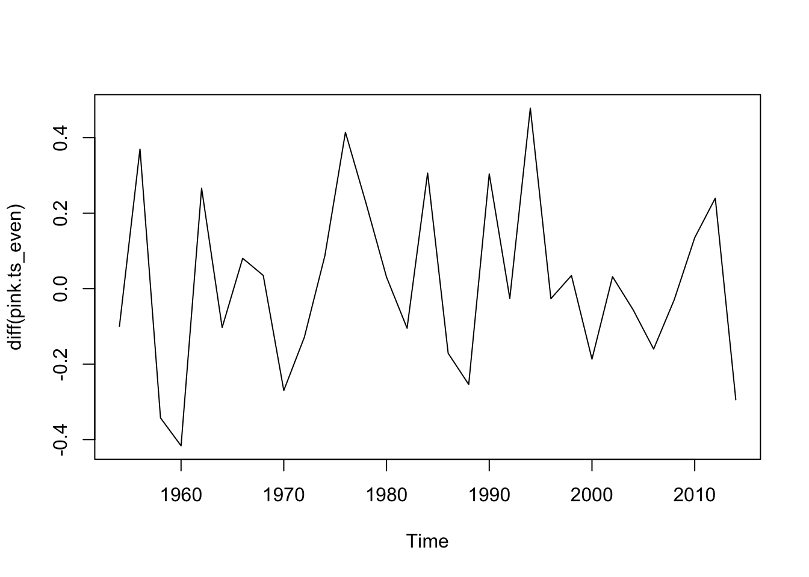
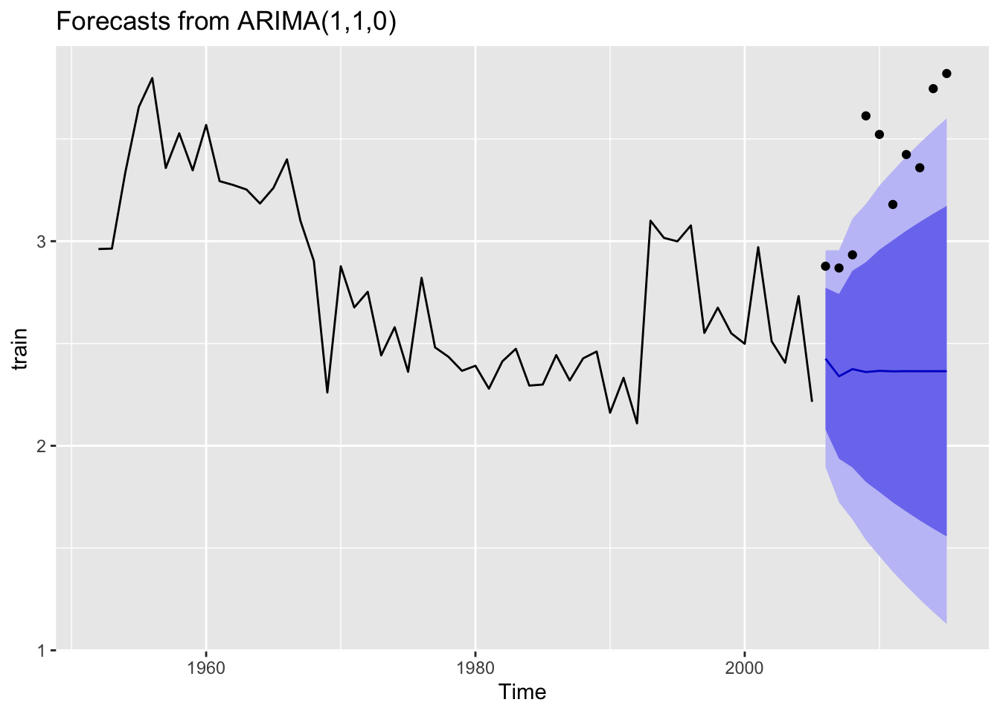
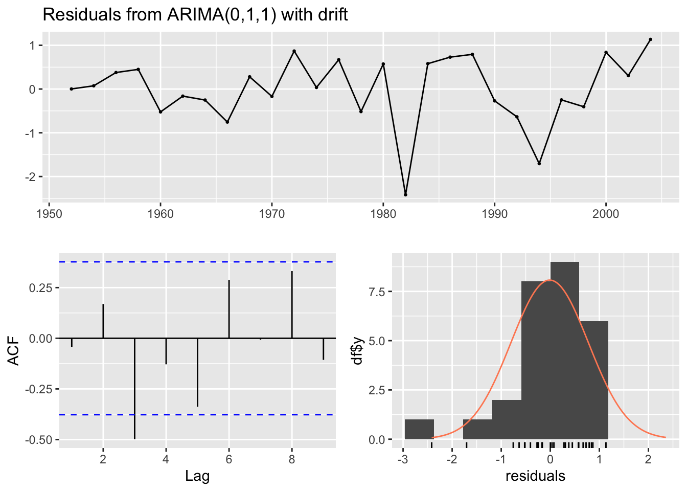

── Attaching core tidyverse packages ──────────────────────── tidyverse 2.0.0 ──
✔ dplyr 1.1.2 ✔ readr 2.1.4
✔ forcats 1.0.0 ✔ stringr 1.5.0
✔ ggplot2 3.4.2 ✔ tibble 3.2.1
✔ lubridate 1.9.2 ✔ tidyr 1.3.0
✔ purrr 1.0.1
── Conflicts ────────────────────────────────────────── tidyverse_conflicts() ──
✖ dplyr::filter() masks stats::filter()
✖ dplyr::lag() masks stats::lag()
ℹ Use the conflicted package (<http://conflicted.r-lib.org/>) to force all conflicts to become errors
Code
library(forecast)
Registered S3 method overwritten by 'quantmod':
method from
as.zoo.data.frame zoo
Code
library(here)
here() starts at /Users/eli.holmes/Documents/GitHub/fish550-2023
Code
library(cowplot)
Attaching package: 'cowplot'
The following object is masked from 'package:lubridate':
stamp
Data
We chose to work with all data to compare ability of the ARIMA models to forecast across different patterns of population dynamics and different sizes of training data sets.
Code
ruggerone_data <-readRDS(here::here("Lab-1", "Data_Images", "ruggerone_data.rds"))#The above code was not working for me, so I've added this in temporarily (MS)#ruggerone_data <- readRDS("C:/GitHub/fish550-2023/Lab-1/Data_Images/ruggerone_data.rds")
Question your team will address
If we approached these data as stock managers, how confident could we be in projected return data 5, 10, or 20 years into the future?
What types of population patterns are ARIMA models best suited for?
Is one species or region “easier” to forecast than others?
Initial plan
For each species we will subset by region and test for stationarity. Then for forecast levels of 5, 10, and 20 years for each region, we will run auto-arima. We will look at forecasts and accuracy using RMSE to determine what level of for asting could be appropriate when considering management utility.
We will pick a couple of regions for each species to demonstrate ACF and PACF, and look through model results for any residuals.
What we actually did
It was harder to compare models across species and regions than we assumed. We created functions to help streamline this process. Also after researching forecast accuracy metrics, we decided to use MASE as a metric instead of RMSE. It was difficult to decipher why some regions were more easily forecasted and others returned unreliable results. Additionally, each species had different dynamics, and some variable methods were applied in order to find a model that worked.
Sockeye: Combined Regions
Subset and format the data to analyze just sockeye.
Look at the options for fitting an ARIMA to the data and then choose a final model. The best model for both of these is ARIMA(0,1,2); however, a comparison with other models suggests that ARIMA(1,1,1) is also a good fit with AIC within 0.3 of the ARIMA(0,1,2). The full dataset requires differencing (d=1).
Code
fit <- forecast::auto.arima(train.sockeye, trace=T)
ARIMA(2,1,2) with drift : Inf
ARIMA(0,1,0) with drift : 61.95027
ARIMA(1,1,0) with drift : 60.11204
ARIMA(0,1,1) with drift : 57.27974
ARIMA(0,1,0) : 59.87487
ARIMA(1,1,1) with drift : Inf
ARIMA(0,1,2) with drift : 57.23854
ARIMA(1,1,2) with drift : Inf
ARIMA(0,1,3) with drift : Inf
ARIMA(1,1,3) with drift : Inf
ARIMA(0,1,2) : 55.53198
ARIMA(0,1,1) : 55.33664
ARIMA(1,1,1) : 55.19379
ARIMA(1,1,0) : 57.99975
ARIMA(2,1,1) : 57.46972
ARIMA(1,1,2) : 57.48549
ARIMA(2,1,0) : 58.91271
ARIMA(2,1,2) : Inf
Best model: ARIMA(1,1,1)
Plot the 5 year forecast for the last part of the dataset compared to the actual data. The real data are represented by the black dots; the forecast is represented by the black line.
Assess how well forecasting performs for sockeye returns by region
FitModFunction<-function(reg, forelevel){#filter region Sockdat<-SockByRegion %>%filter(region == reg)#create time series datts <-ts(Sockdat$lnreturns, start=Sockdat$year[1]) #this assumes the first year in data is the start of the time series (they are in order) cutoff<-2015-forelevel train <-window(datts, 1952, cutoff) test <-window(datts, cutoff+1, 2015) mod <-auto.arima(train)#testing to be sure that this is the best model (is the best mode the simplest if it is within 2 AIC values?) trace <-capture.output({# assign so it doesn't pollute the output model <-auto.arima(datts, trace =TRUE) }) con <-textConnection(trace) models <-read.table(con, sep=":")close(con)#getting the "best models" that are within 2 AIC units BestMods<-models%>%filter(row_number() !=nrow(models)) %>%mutate(AIC =replace(V2, V2 =="Inf", 99999), AIC =as.numeric(AIC), DeltaAIC = AIC-min(AIC)) %>%filter(DeltaAIC <=2.0)for(i in1:nrow(BestMods)){ BestMods$Mod[i]<-strsplit(strsplit(strsplit(BestMods$V1[i], "[(]")[[1]][2], "[)]")[[1]][1],"[,]") BestMods$npar[i]<-sum(as.numeric(BestMods$Mod[i][[1]][c(1,3)]))if(strsplit(strsplit(BestMods$V1[i], "[(]")[[1]][2], "[)]")[[1]][2] ==" with drift "){ BestMods$npar[i] = BestMods$npar[i] +1 } } New<-BestMods %>%filter(npar ==min(npar))if(0%in% New$DeltaAIC){#auto arima picked the best model res<-accuracy(forecast(mod, h=forelevel), test)[2,"MASE"] #test set MASE }else{#of the models with the fewest parameters, pick the lowest AIC newmod<-New %>%filter(AIC ==min(AIC)) %>%select(Mod) mod<-Arima(train, order =as.numeric(strsplit(newmod$Mod[[1]], "[,]")), include.constant =TRUE) res<-accuracy(forecast(mod, h=forelevel), test)[2,"MASE"] #test set MASE }return(list(Fit = mod, MASE = res, Bm = BestMods)) #include best mods for testing to see that it's doing what I want}RegionModsSock<-mapply(FitModFunction, Allcombs$regions, Allcombs$forecastlevels, SIMPLIFY =FALSE)
Extract MASE for comparisons of models across regions.
Code
RegionMASESock<-sapply(RegionModsSock, function(x){y<-x$MASE})RegionBestModSock<-sapply(RegionModsSock, function(x){y<-as.character(x$Fit)})ResultsTableSock<-Allcombs %>%add_column(Model = RegionBestModSock, MASE = RegionMASESock)
How well does auto.arima do in choosing a model? Is it different from what we would choose looking at ACF and PACF? For Cook Inlet, auto.arima selected ARIMA(4,1,1), but PACF has a significant lag at 6 and ACF trails off.
ME RMSE MAE MPE MAPE MASE
Training set 0.02471079 0.3370305 0.2702999 -38.06705 62.87923 0.8967555
Test set 0.34919358 0.4082214 0.3491936 17.84353 17.84353 1.1584957
ACF1 Theil's U
Training set 0.008040561 NA
Test set -0.080588177 1.829245
ME RMSE MAE MPE MAPE MASE
Training set 0.03439583 0.3641608 0.2787817 -40.97753 65.59960 0.9248951
Test set 0.29776606 0.3308204 0.2977661 15.30517 15.30517 0.9878781
ACF1 Theil's U
Training set -0.007356741 NA
Test set 0.206715703 1.669537
Code
#MASE is very high for the test set.
Here are the plots comparing the two models for Cook Inlet. The plots look very similar, but the forecast differs a bit for the last 2 years.
Chum: Regional
Looking at data:
Getting a subset of the data (removing regions with no data):
Code
#removing Korea Japan because there's no dataChumByRegion<-ruggerone_data %>%filter(region !="japan") %>%filter(region !="korea") %>%group_by(species, region, year) %>%summarize(total =sum(returns, na.rm=TRUE)) %>%mutate(lnreturns =log(total)) %>%filter(species =="chum")
`summarise()` has grouped output by 'species', 'region'. You can override using
the `.groups` argument.
Code
head(ChumByRegion)
# A tibble: 6 × 5
# Groups: species, region [1]
species region year total lnreturns
<chr> <chr> <dbl> <dbl> <dbl>
1 chum ci 1952 1.25 0.226
2 chum ci 1953 1.44 0.363
3 chum ci 1954 1.93 0.656
4 chum ci 1955 0.957 -0.0436
5 chum ci 1956 2.11 0.748
6 chum ci 1957 2.76 1.01
Code
#making sure all the regions cover all the years (or at least start and end)ChumByRegion %>%group_by(region) %>%summarise(startyear =min(year), endyear =max(year))
#ACF and PACFACFandPACF<-function(reg){ Chumdat<-ChumByRegion %>%filter(region == reg)#create time series datts <-ts(Chumdat$lnreturns, start=Chumdat$year[1])return(list(a =acf(datts, plot =FALSE), p =pacf(datts, plot =FALSE)))}#loop through regions/levelsDiagPlots<-lapply(regions, ACFandPACF)names(DiagPlots)<-regions
Code
#ACF plots for each regionpar(mfrow=c(3,4))for(r in1:length(regions)){plot(DiagPlots[[r]][[1]], main =paste0("Region: ", regionskey[r]))}
Code
#PACF plots for each regionpar(mfrow=c(3,4))for(r in1:length(regions)){plot(DiagPlots[[r]][[2]], main =paste0("Region: ", regionskey[r]))}
Code
#function for ARIMA modelsFitModFunction<-function(reg, forelevel){#This function takes a region and forecast level, subsets the data according to these parameters, then sets up the time series object, and the test and train sets. It uses auto.arima to find the "best" model and then this is checked by comparing other models with DeltaAICc < 2 and the number of parameters. If auto.arima picked a the model with the lowest AIC and the fewest parameters, it forecasts using this model and checks forecast accuracy with MASE. If not, it refits the model using Arima and the simpler model, and then checks forecast accuracy with this.#filter region Chumdat<-ChumByRegion %>%filter(region == reg)#create time series datts <-ts(Chumdat$lnreturns, start=Chumdat$year[1]) #this assumes the first year in data is the start of the time series (they are in order) cutoff<-2015-forelevel train <-window(datts, 1952, cutoff) test <-window(datts, cutoff+1, 2015) mod <-auto.arima(train)#testing to be sure that this is the best model (is the best mode the simplest if it is within 2 AIC values?) trace <-capture.output({# assign so it doesn't pollute the output model <-auto.arima(datts, trace =TRUE) }) con <-textConnection(trace) models <-read.table(con, sep=":")close(con)#getting the "best models" that are within 2 AIC units BestMods<-models%>%filter(row_number() !=nrow(models)) %>%mutate(AIC =replace(V2, V2 =="Inf", 99999), AIC =as.numeric(AIC), DeltaAIC = AIC-min(AIC)) %>%filter(DeltaAIC <=2.0)for(i in1:nrow(BestMods)){ BestMods$Mod[i]<-strsplit(strsplit(strsplit(BestMods$V1[i], "[(]")[[1]][2], "[)]")[[1]][1],"[,]") BestMods$npar[i]<-sum(as.numeric(BestMods$Mod[i][[1]][c(1,3)]))if(strsplit(strsplit(BestMods$V1[i], "[(]")[[1]][2], "[)]")[[1]][2] ==" with drift "){ BestMods$npar[i] = BestMods$npar[i] +1 } } New<-BestMods %>%filter(npar ==min(npar))if(0%in% New$DeltaAIC){#auto arima picked the best model res<-accuracy(forecast(mod, h=forelevel), test)[2,"MASE"] #test set MASE }else{#of the models with the fewest parameters, pick the lowest AIC newmod<-New %>%filter(AIC ==min(AIC)) %>%select(Mod) mod<-Arima(train, order =as.numeric(strsplit(newmod$Mod[[1]], "[,]")), include.constant =TRUE) res<-accuracy(forecast(mod, h=forelevel), test)[2,"MASE"] #test set MASE }return(list(Fit = mod, MASE = res, Bm = BestMods)) #include best mods for testing to see that it's doing what I want}
RegionMASEChum<-sapply(RegionModsChum, function(x){y<-x$MASE})RegionBestModChum<-sapply(RegionModsChum, function(x){y<-as.character(x$Fit)})#combine into tablesResultsTableChum<-Allcombs %>%add_column(Model = RegionBestModChum, MASE = RegionMASEChum)knitr::kable(head(ResultsTableChum))
regions
forecastlevels
Model
MASE
ci
5
ARIMA(1,1,1)
0.4232248
ci
10
ARIMA(1,1,1)
0.3650863
ci
20
ARIMA(0,0,2) with non-zero mean
1.3678453
e_kam
5
ARIMA(1,0,0) with non-zero mean
2.0352335
e_kam
10
ARIMA(1,0,0) with non-zero mean
1.6504750
e_kam
20
ARIMA(1,0,0) with non-zero mean
1.4845904
Pink: Combined Regions
Subset the data to look at pink salmon only.
Code
#Filter by species (Pink)dat <- ruggerone_data %>%filter(species=="pink"& region=="ci") %>%mutate(log.returns =log(returns)) %>%select(year, log.returns)
Plot the data
Code
#Plot by regionruggerone_data %>%filter(species=="pink") %>%ggplot(aes(x=year, y=log(returns))) +geom_line() +ggtitle("pink salmon log abundance by region") +facet_wrap(~region)
Note that there is no data in Korea, and WA has a lot of 0 values and very low returns. We will filter these regions out. All 0 values (-Inf in log space) were removed.
`summarise()` has grouped output by 'species', 'region'. You can override using
the `.groups` argument.
# A tibble: 768 × 5
# Groups: species, region [12]
species region year total lnreturns
<chr> <chr> <dbl> <dbl> <dbl>
1 pink ci 1952 4.36 1.47
2 pink ci 1953 1.30 0.264
3 pink ci 1954 4.67 1.54
4 pink ci 1955 2.67 0.981
5 pink ci 1956 3.57 1.27
# ℹ 763 more rows
Next, a time series object was created and we look at the ACF and PACF
Code
total.pink<-PinkByRegion %>%group_by(year) %>%summarize(lntotal=log(sum(total, na.rm=T)))pink.ts<-ts(total.pink$lntotal, start=total.pink$year[1])plot(diff(pink.ts)) #something odd happened between 1990 and 2005
Code
acf(diff(pink.ts)) #ruh roh, ACF correlation for entire series
The ACF looks like there is a lot of corelation, that’s probably because Pinks have a very consistent two year cycle.
Let’s try a forecast model to see what happens.
Code
#Let's train and test with a 10 year periodtrain.pink<-window(pink.ts, start=1952, end=2005)test.pink<-window(pink.ts, start=2006, end=2015)fit <- forecast::auto.arima(train.pink, trace=T)
ARIMA(2,1,2) with drift : Inf
ARIMA(0,1,0) with drift : 44.48651
ARIMA(1,1,0) with drift : -0.8966894
ARIMA(0,1,1) with drift : 18.15923
ARIMA(0,1,0) : 42.45004
ARIMA(2,1,0) with drift : -1.222687
ARIMA(3,1,0) with drift : -2.155628
ARIMA(4,1,0) with drift : 0.3831016
ARIMA(3,1,1) with drift : 0.2902468
ARIMA(2,1,1) with drift : Inf
ARIMA(4,1,1) with drift : Inf
ARIMA(3,1,0) : -4.270823
ARIMA(2,1,0) : -3.360303
ARIMA(4,1,0) : -1.841485
ARIMA(3,1,1) : -1.889482
ARIMA(2,1,1) : Inf
ARIMA(4,1,1) : 0.4019518
Best model: ARIMA(3,1,0)
Code
fit.final.pink<-forecast::auto.arima(train.pink, approximation = F, stepwise = F)#30 year forcast, not so believeablefit.final.pink %>%forecast(h=15) %>%autoplot() +geom_point(aes(x=x, y=y), data=fortify(test.pink))
The best model was the ARIMA(3,1,0), but the forecast doesn’t look particularly great.
Given the life history of pink salmon, let’s parse the data set into two pieces, even and odd years.
#Even Years -- Totaltotal.pink_even<-PinkByRegion_even %>%group_by(year) %>%summarize(lntotal=log(sum(total, na.rm=T)))pink.ts_even<-ts(total.pink_even$lntotal, start=total.pink$year[1], frequency =0.5)plot(diff(pink.ts_even)) #Looks pretty stationary

Code
acf(diff(pink.ts_even)) #This looks much better
The differences and the ACF plots here look better than the aggregate data set. Let’s look at a forcast.
Code
#Train and test for a 10 year periodtrain.pink_even<-window(pink.ts_even, start=1952, end=2004)test.pink_even<-window(pink.ts_even, start=2006, end=2014)fit <- forecast::auto.arima(train.pink_even, trace=T)
ARIMA(2,1,2) with drift : Inf
ARIMA(0,1,0) with drift : 2.346942
ARIMA(1,1,0) with drift : 4.419114
ARIMA(0,1,1) with drift : 4.222938
ARIMA(0,1,0) : 0.1554815
ARIMA(1,1,1) with drift : Inf
Best model: ARIMA(0,1,0)
The best model was the ARIMA(0,1,0) model. But the forcast doesn’t capture the trend.
Let’s repeat the next steps for odd years.
Code
#Odd Years -- Totaltotal.pink_odd<-PinkByRegion_odd %>%group_by(year) %>%summarize(lntotal=log(sum(total, na.rm=T)))pink.ts_odd<-ts(total.pink_odd$lntotal, start=total.pink_odd$year[1], frequency =0.5)plot(diff(pink.ts_odd)) #Looks pretty stationary
Code
acf(diff(pink.ts_odd)) #This also looks better
These look stationary and the ACF looks better.
Code
#Train and test for a 10 year periodtrain.pink_odd<-window(pink.ts_odd, start=1953, end=2005)test.pink_odd<-window(pink.ts_odd, start=2007, end=2015)fit <- forecast::auto.arima(train.pink_odd, trace=T)
ARIMA(2,1,2) with drift : Inf
ARIMA(0,1,0) with drift : 4.01998
ARIMA(1,1,0) with drift : 5.551776
ARIMA(0,1,1) with drift : 4.461601
ARIMA(0,1,0) : 1.771054
ARIMA(1,1,1) with drift : Inf
Best model: ARIMA(0,1,0)
The best model was the ARIMA(0,1,0) model. But the forcast for only odd years also doesn’t capture the trend.
Pinks: Regional Considerations
Because of pink salmon life history, for regional models, models with even and odd years were considered separately.
Code
#Even Years First #Differenced plots for all Regions PinkByRegion_even %>%group_by(region) %>%mutate(diff_total =c(NA, diff(total))) %>%ggplot(aes(x = year, y = diff_total)) +geom_line() +facet_wrap(~region, scales ="free_y") +ylab("Difference in Total Returns") +xlab("Year") +ggtitle("Diff by Region (Even Years)")
#ggfortify::ggstat_acf(method = "ma", na.action = na.pass)# Odd Years First #Differenced plots for all Regions PinkByRegion_odd %>%group_by(region) %>%mutate(diff_total =c(NA, diff(total))) %>%ggplot(aes(x = year, y = diff_total)) +geom_line() +facet_wrap(~region, scales ="free_y") +ylab("Difference in Total Returns") +xlab("Year") +ggtitle("Diff by Region (Odd Years)")
To test stationarity outside the auto.arima function , the ADF and KPSS tests were compared for all years, and even and odd years. Note for the ADF null hypothesis is that the system is non-stationary (we want to reject), and the KPSS test null hypothesis is that there is stationarity.
KPSS Test for Level Stationarity
data: pink.ts_odd
KPSS Level = 0.64278, Truncation lag parameter = 3, p-value = 0.01875
A complication is that the data sets split by even and odd years were not passing the tests of stationarity. Perhaps other steps should have been taken.
Code
#Functions for Regional ACF and PACF #======================================================ACFandPACF<-function(reg){ Pinkdat<-PinkByRegion %>%filter(region == reg)#create time series datts <-ts(Pinkdat$lnreturns, start=Pinkdat$year[1]) return(list(a =acf(datts, plot =FALSE), p =pacf(datts, plot =FALSE)))}ACFandPACF_even<-function(reg){ Pinkdat<-PinkByRegion_even %>%filter(region == reg)#create time series datts <-ts(Pinkdat$lnreturns, start=Pinkdat$year[1]) return(list(a =acf(datts, plot =FALSE), p =pacf(datts, plot =FALSE)))}ACFandPACF_odd<-function(reg){ Pinkdat<-PinkByRegion_odd %>%filter(region == reg)#create time series datts <-ts(Pinkdat$lnreturns, start=Pinkdat$year[1]) return(list(a =acf(datts, plot =FALSE), p =pacf(datts, plot =FALSE)))}FitModFunction<-function(reg, forelevel){#filter region Pinkdat<-PinkByRegion %>%filter(region == reg)#create time series datts <-ts(Pinkdat$lnreturns, start=Pinkdat$year[1], frequency =0.5) #set Frequency for 0.5 cutoff<-2014-forelevel train <-window(datts, Pinkdat$year[1], cutoff) test <-window(datts, cutoff+1, 2014) mod <-auto.arima(train)#testing to be sure that this is the best model (is the best mode the simplest if it is within 2 AIC values?) trace <-capture.output({# assign so it doesn't pollute the output model <-auto.arima(datts, trace =TRUE) }) con <-textConnection(trace) models <-read.table(con, sep=":")close(con)#getting the "best models" that are within 2 AIC units BestMods<-models%>%filter(row_number() !=nrow(models)) %>%mutate(AIC =replace(V2, V2 =="Inf", 99999), AIC =as.numeric(AIC), DeltaAIC = AIC-min(AIC)) %>%filter(DeltaAIC <=2.0)for(i in1:nrow(BestMods)){ BestMods$Mod[i]<-strsplit(strsplit(strsplit(BestMods$V1[i], "[(]")[[1]][2], "[)]")[[1]][1],"[,]") BestMods$npar[i]<-sum(as.numeric(BestMods$Mod[i][[1]][c(1,3)]))if(strsplit(strsplit(BestMods$V1[i], "[(]")[[1]][2], "[)]")[[1]][2] ==" with drift "){ BestMods$npar[i] = BestMods$npar[i] +1 } } New<-BestMods %>%filter(npar ==min(npar))if(0%in% New$DeltaAIC){#auto arima picked the best model res<-accuracy(forecast(mod, h=forelevel), test)[2,"MASE"] #test set MASE }else{#of the models with the fewest parameters, pick the lowest AIC newmod<-New %>%filter(AIC ==min(AIC)) %>%select(Mod) mod<-Arima(train, order =as.numeric(strsplit(newmod$Mod[[1]], "[,]")), include.constant =TRUE) res<-accuracy(forecast(mod, h=forelevel), test)[2,"MASE"] #test set MASE }return(list(Fit = mod, MASE = res, Bm = BestMods)) #include best mods for testing to see that it's doing what I want}FitModFunction_even<-function(reg, forelevel){#filter region Pinkdat<-PinkByRegion_even %>%filter(region == reg)#create time series datts <-ts(Pinkdat$lnreturns, start=Pinkdat$year[1], frequency =0.5) #set Frequency for 0.5 cutoff<-2014-forelevel train <-window(datts, Pinkdat$year[1], cutoff) test <-window(datts, cutoff+1, 2014) mod <-auto.arima(train)#testing to be sure that this is the best model (is the best mode the simplest if it is within 2 AIC values?) trace <-capture.output({# assign so it doesn't pollute the output model <-auto.arima(datts, trace =TRUE) }) con <-textConnection(trace) models <-read.table(con, sep=":")close(con)#getting the "best models" that are within 2 AIC units BestMods<-models%>%filter(row_number() !=nrow(models)) %>%mutate(AIC =replace(V2, V2 =="Inf", 99999), AIC =as.numeric(AIC), DeltaAIC = AIC-min(AIC)) %>%filter(DeltaAIC <=2.0)for(i in1:nrow(BestMods)){ BestMods$Mod[i]<-strsplit(strsplit(strsplit(BestMods$V1[i], "[(]")[[1]][2], "[)]")[[1]][1],"[,]") BestMods$npar[i]<-sum(as.numeric(BestMods$Mod[i][[1]][c(1,3)]))if(strsplit(strsplit(BestMods$V1[i], "[(]")[[1]][2], "[)]")[[1]][2] ==" with drift "){ BestMods$npar[i] = BestMods$npar[i] +1 } } New<-BestMods %>%filter(npar ==min(npar))if(0%in% New$DeltaAIC){#auto arima picked the best model res<-accuracy(forecast(mod, h=forelevel), test)[2,"MASE"] #test set MASE }else{#of the models with the fewest parameters, pick the lowest AIC newmod<-New %>%filter(AIC ==min(AIC)) %>%select(Mod) mod<-Arima(train, order =as.numeric(strsplit(newmod$Mod[[1]], "[,]")), include.constant =TRUE) res<-accuracy(forecast(mod, h=forelevel), test)[2,"MASE"] #test set MASE }return(list(Fit = mod, MASE = res, Bm = BestMods)) #include best mods for testing to see that it's doing what I want}FitModFunction_odd<-function(reg, forelevel){#filter region Pinkdat<-PinkByRegion_odd %>%filter(region == reg)#create time series datts <-ts(Pinkdat$lnreturns, start=Pinkdat$year[1], frequency =0.5) cutoff<-2015-forelevel train <-window(datts, Pinkdat$year[1], cutoff) test <-window(datts, cutoff+1, 2015) mod <-auto.arima(train)#testing to be sure that this is the best model (is the best mode the simplest if it is within 2 AIC values?) trace <-capture.output({# assign so it doesn't pollute the output model <-auto.arima(datts, trace =TRUE) }) con <-textConnection(trace) models <-read.table(con, sep=":")close(con)#getting the "best models" that are within 2 AIC units BestMods<-models%>%filter(row_number() !=nrow(models)) %>%mutate(AIC =replace(V2, V2 =="Inf", 99999), AIC =as.numeric(AIC), DeltaAIC = AIC-min(AIC)) %>%filter(DeltaAIC <=2.0)for(i in1:nrow(BestMods)){ BestMods$Mod[i]<-strsplit(strsplit(strsplit(BestMods$V1[i], "[(]")[[1]][2], "[)]")[[1]][1],"[,]") BestMods$npar[i]<-sum(as.numeric(BestMods$Mod[i][[1]][c(1,3)]))if(strsplit(strsplit(BestMods$V1[i], "[(]")[[1]][2], "[)]")[[1]][2] ==" with drift "){ BestMods$npar[i] = BestMods$npar[i] +1 } } New<-BestMods %>%filter(npar ==min(npar))if(0%in% New$DeltaAIC){#auto arima picked the best model res<-accuracy(forecast(mod, h=forelevel), test)[2,"MASE"] #test set MASE }else{#of the models with the fewest parameters, pick the lowest AIC newmod<-New %>%filter(AIC ==min(AIC)) %>%select(Mod) mod<-Arima(train, order =as.numeric(strsplit(newmod$Mod[[1]], "[,]")), include.constant =TRUE) res<-accuracy(forecast(mod, h=forelevel), test)[2,"MASE"] #test set MASE }return(list(Fit = mod, MASE = res, Bm = BestMods)) #include best mods for testing to see that it's doing what I want}#================================================================
$ci
$ci$Fit
Series: train
ARIMA(1,0,0) with zero mean
Coefficients:
ar1
0.6039
s.e. 0.1467
sigma^2 = 0.4057: log likelihood = -27.79
AIC=59.57 AICc=60.03 BIC=62.31
$ci$MASE
[1] 2.144842
$ci$Bm
V1 V2 AIC DeltaAIC Mod npar
1 ARIMA(1,0,0) with non-zero mean 75.3159 75.31590 0.36364 1, 0, 0 1
2 ARIMA(1,0,0) with zero mean 74.95226 74.95226 0.00000 1, 0, 0 1
$ci
$ci$Fit
Series: train
ARIMA(1,0,0) with zero mean
Coefficients:
ar1
0.6037
s.e. 0.1610
sigma^2 = 0.4189: log likelihood = -26.28
AIC=56.57 AICc=57.07 BIC=59.16
$ci$MASE
[1] 1.555645
$ci$Bm
V1 V2 AIC DeltaAIC Mod npar
1 ARIMA(1,0,0) with non-zero mean 75.3159 75.31590 0.36364 1, 0, 0 1
2 ARIMA(1,0,0) with zero mean 74.95226 74.95226 0.00000 1, 0, 0 1
$ci
$ci$Fit
Series: train
ARIMA(1,0,0) with zero mean
Coefficients:
ar1
0.6430
s.e. 0.1528
sigma^2 = 0.3645: log likelihood = -19.87
AIC=43.74 AICc=44.37 BIC=45.93
$ci$MASE
[1] 1.425649
$ci$Bm
V1 V2 AIC DeltaAIC Mod npar
1 ARIMA(1,0,0) with non-zero mean 75.3159 75.31590 0.36364 1, 0, 0 1
2 ARIMA(1,0,0) with zero mean 74.95226 74.95226 0.00000 1, 0, 0 1
$e_kam
$e_kam$Fit
Series: train
ARIMA(0,1,0)
sigma^2 = 0.1936: log likelihood = -16.75
AIC=35.49 AICc=35.65 BIC=36.82
$e_kam$MASE
[1] 0.1721234
$e_kam$Bm
V1 V2 AIC DeltaAIC Mod npar
1 ARIMA(1,1,0) with drift 60.55848 60.55848 1.02617 1, 1, 0 2
2 ARIMA(0,1,0) 59.53231 59.53231 0.00000 0, 1, 0 0
$e_kam
$e_kam$Fit
Series: train
ARIMA(0,0,1) with non-zero mean
Coefficients:
ma1 mean
0.5514 3.9961
s.e. 0.1250 0.1117
sigma^2 = 0.1551: log likelihood = -12.29
AIC=30.59 AICc=31.63 BIC=34.48
$e_kam$MASE
[1] 0.2364036
$e_kam$Bm
V1 V2 AIC DeltaAIC Mod npar
1 ARIMA(1,1,0) with drift 60.55848 60.55848 1.02617 1, 1, 0 2
2 ARIMA(0,1,0) 59.53231 59.53231 0.00000 0, 1, 0 0
$e_kam
$e_kam$Fit
Series: train
ARIMA(0,0,1) with non-zero mean
Coefficients:
ma1 mean
0.5404 3.9140
s.e. 0.1481 0.1168
sigma^2 = 0.1433: log likelihood = -8.97
AIC=23.94 AICc=25.28 BIC=27.21
$e_kam$MASE
[1] 0.1918676
$e_kam$Bm
V1 V2 AIC DeltaAIC Mod npar
1 ARIMA(1,1,0) with drift 60.55848 60.55848 1.02617 1, 1, 0 2
2 ARIMA(0,1,0) 59.53231 59.53231 0.00000 0, 1, 0 0
Code
#names(RegionMods_odd) #should be three for each region
Now, we’re extracting the MASE and creating our final model tables
Code
#getting MASE#AllRegionMASE<-sapply(RegionMods, function(x){y<-x$MASE})RegionBestMod<-sapply(RegionMods, function(x){y<-as.character(x$Fit)})#EvenRegionMASE_even<-sapply(RegionMods_even, function(x){y<-x$MASE})RegionBestMod_even<-sapply(RegionMods_even, function(x){y<-as.character(x$Fit)})#OddRegionMASE_odd<-sapply(RegionMods_odd, function(x){y<-x$MASE})RegionBestMod_odd<-sapply(RegionMods_odd, function(x){y<-as.character(x$Fit)})#combine into tables#allResultsTable<-Allcombs %>%add_column(Model = RegionBestMod, MASE = RegionMASE)ResultsTable
# A tibble: 36 × 4
regions forecastlevels Model MASE
<chr> <dbl> <chr> <dbl>
1 ci 5 ARIMA(2,0,0) with non-zero mean 0.460
2 ci 10 ARIMA(2,0,0) with non-zero mean 0.549
3 ci 20 ARIMA(1,0,1) with non-zero mean 0.711
4 e_kam 5 ARIMA(2,0,0) with non-zero mean 0.134
5 e_kam 10 ARIMA(2,0,0) with non-zero mean 0.111
6 e_kam 20 ARIMA(2,0,0) with non-zero mean 0.196
7 japan 5 ARIMA(0,0,0) with non-zero mean 0.744
8 japan 10 ARIMA(0,0,0) with non-zero mean 0.901
9 japan 20 ARIMA(0,1,1) 0.853
10 kod 5 ARIMA(0,1,1) with drift 0.221
# ℹ 26 more rows
Code
#evenResultsTable_even<-Allcombs %>%add_column(Model = RegionBestMod_even, MASE = RegionMASE_even)ResultsTable_even
# A tibble: 36 × 4
regions forecastlevels Model MASE
<chr> <dbl> <chr> <dbl>
1 ci 5 ARIMA(0,1,0) 0.360
2 ci 10 ARIMA(0,1,0) 1.24
3 ci 20 ARIMA(0,1,0) 0.395
4 e_kam 5 ARIMA(0,0,0) with non-zero mean 0.240
5 e_kam 10 ARIMA(0,0,0) with non-zero mean 0.219
6 e_kam 20 ARIMA(0,0,0) with non-zero mean 0.238
7 japan 5 ARIMA(0,1,0) 0.743
8 japan 10 ARIMA(0,1,0) 0.500
9 japan 20 ARIMA(1,0,0) with non-zero mean 0.731
10 kod 5 ARIMA(0,0,0) with non-zero mean 0.155
# ℹ 26 more rows
Code
#OddResultsTable_odd<-Allcombs %>%add_column(Model = RegionBestMod_odd, MASE = RegionMASE_odd)ResultsTable_odd
# A tibble: 36 × 4
regions forecastlevels Model MASE
<chr> <dbl> <chr> <dbl>
1 ci 5 ARIMA(1,0,0) with zero mean 2.14
2 ci 10 ARIMA(1,0,0) with zero mean 1.56
3 ci 20 ARIMA(1,0,0) with zero mean 1.43
4 e_kam 5 ARIMA(0,1,0) 0.172
5 e_kam 10 ARIMA(0,0,1) with non-zero mean 0.236
6 e_kam 20 ARIMA(0,0,1) with non-zero mean 0.192
7 japan 5 ARIMA(1,1,0) 0.898
8 japan 10 ARIMA(0,1,0) 0.557
9 japan 20 ARIMA(1,0,0) with non-zero mean 0.550
10 kod 5 ARIMA(0,1,0) 0.124
# ℹ 26 more rows
Results
Sockeye:
Plot MASE for three different forecast periods - 5, 10, and 20 years - across all regions. MASE < 1 is a “good” value.
None of the ARIMA models performed well for the forecasts of 20 years of data. Below is a comparison of the three lengths of forecasted data for South British Columbia where MASE was below 1 for the 5 year forecast but >1 for the 10 and 20 year forecasts.
Code
sock.sbc<-subset(SockByRegion, region=='sbc')sbc.ts<-ts(sock.sbc$lnreturns, start=sock.sbc$year[1])#create training and test datasets for the 5, 10, and 20 year forecaststrain.sbc5<-window(sbc.ts, start=1952, end=2010)test.sbc5<-window(sbc.ts, start=2011, end=2015)sbc.final5<-forecast::auto.arima(train.sbc5, approximation = F, stepwise = F)train.sbc10<-window(sbc.ts, start=1952, end=2005)test.sbc10<-window(sbc.ts, start=2006, end=2015)sbc.final10<-forecast::auto.arima(train.sbc10, approximation = F, stepwise = F)train.sbc20<-window(sbc.ts, start=1952, end=1995)test.sbc20<-window(sbc.ts, start=1996, end=2015)sbc.final20<-forecast::auto.arima(train.sbc20, approximation = F, stepwise = F)
Here are plots of the three forecast scenarios for sockeye in South British Columbia.
Looking at stationarity:
Code
Ndiff<-sapply(RegionBestModSock, function(x){ a<-strsplit(strsplit(strsplit(x, "[(]")[[1]][2], "[)]")[[1]][1],"[,]")return(a[[1]][2])})tibble(Ndiff = Ndiff, region = Allcombs$regions, level = Allcombs$forecastlevels) %>%ggplot() +geom_bar(aes(x = region, y = Ndiff, fill =as.factor(level)), stat ="identity", position ="dodge") +scale_x_discrete(labels =as_labeller(regionskey)) +labs(fill ="Forecast Levels", x ="Region", y ="Number of Differences") +ggtitle("Number of differences to achieve stationarity (Sockeye)") +theme_bw() +theme(axis.text.x=element_text(angle=-90, hjust =0, vjust =0.5 ))
For Sockeye, 6 regions required differencing for all of the three subsets of the data (3 forecasting levels). Two regions required differencing for one subset of the data; four regions were stationary at any level of subsetting.
None of the regional models for the 5-year forecast had autocorrelation in the residuals based on the results of the Ljung-Box test (p-value > 0.05).
Chum:
Code
ggplot(ResultsTableChum) +geom_bar(aes(x = regions, y = MASE, fill =as.factor(forecastlevels)), stat ="identity", position ="dodge") +geom_hline(aes(yintercept =1), linetype ="dashed") +scale_x_discrete(labels =as_labeller(regionskey)) +labs(fill ="Forecast Levels", x ="Region") +ggtitle("Chum") +theme_bw() +theme(axis.text.x=element_text(angle=-90, hjust =0, vjust =0.5 ))
Many of the 5 and 10 year forecasts for Chum seem to perform well across regions. Models fit to data in Russia do the worst at forecasting in that region. Additionally, forecasts are poor across the different numbers of years tested in E. Kamachatka, SE Alaska and W. Kamachatka.
20 year forecast for Kodiak:
Code
chum.kod<-subset(ChumByRegion, region=='kod')chum.ts<-ts(chum.kod$lnreturns, start=chum.kod$year[1])#test datasets for plottingtest.kod20<-window(chum.ts, start=1996, end=2015)forecast(RegionModsChum[[9]]$Fit, h =20) %>%autoplot() +geom_point(aes(x=x, y=y), data=fortify(test.kod20))
10 year forecast for Russia:
Code
chum.russ<-subset(ChumByRegion, region=='m_i')chum.ts<-ts(chum.russ$lnreturns, start=chum.russ$year[1])#test datasets for plottingtest.russ10<-window(chum.ts, start=2006, end=2015)forecast(RegionModsChum[[11]]$Fit, h =10) %>%autoplot() +geom_point(aes(x=x, y=y), data=fortify(test.russ10))

It looks like returns really increase at the end of the time series in this region, which is likely why ARIMA models don’t forecast this well.
Looking at stationarity:
Code
Ndiff<-sapply(RegionBestModChum, function(x){ a<-strsplit(strsplit(strsplit(x, "[(]")[[1]][2], "[)]")[[1]][1],"[,]")return(a[[1]][2])})tibble(Ndiff = Ndiff, region = Allcombs$regions, level = Allcombs$forecastlevels) %>%ggplot() +geom_bar(aes(x = region, y = Ndiff, fill =as.factor(level)), stat ="identity", position ="dodge") +scale_x_discrete(labels =as_labeller(regionskey)) +labs(fill ="Forecast Levels", x ="Region", y ="Number of Differences") +ggtitle("Number of differences to achieve stationarity (Chum)") +theme_bw() +theme(axis.text.x=element_text(angle=-90, hjust =0, vjust =0.5 ))
For Chum, time series for 5 of the regions were stationary (using tests from auto.arima) and 7 required 1 difference to be stationary.
There was significant autocorrelation (based on Ljung-Box test) in 4 of the regional models for Chum:
Code
ac_mods_chum<-c(26, 27, 31, 32) #indexes of models with autocorrelated residualsfor(i in1:length(ac_mods_chum)){print(paste(regionskey[ResultsTableChum$regions[ac_mods_chum[i]]], ResultsTableChum$forecastlevels[ac_mods_chum[i]]))checkresiduals(RegionModsChum[[ac_mods_chum[i]]]$Fit)}
[1] "SE Alaska 10"
Ljung-Box test
data: Residuals from ARIMA(1,0,0) with non-zero mean
Q* = 25.498, df = 9, p-value = 0.002467
Model df: 1. Total lags used: 10
[1] "SE Alaska 20"
Ljung-Box test
data: Residuals from ARIMA(1,0,0) with non-zero mean
Q* = 15.578, df = 8, p-value = 0.04884
Model df: 1. Total lags used: 9
[1] "NA 5"
Ljung-Box test
data: Residuals from ARIMA(0,1,1)
Q* = 35.287, df = 9, p-value = 5.302e-05
Model df: 1. Total lags used: 10
[1] "NA 10"
Ljung-Box test
data: Residuals from ARIMA(0,1,1)
Q* = 34.843, df = 9, p-value = 6.35e-05
Model df: 1. Total lags used: 10
This suggests that ARIMA models may not be the best fit in this instance.
Pink:
Plot MASE for three different forecast periods - 5, 10, and 20 years - across all regions. MASE < 1 is a “good” value.
Code
#All Yearsggplot(ResultsTable) +geom_bar(aes(x = regions, y = MASE, fill =as.factor(forecastlevels)), stat ="identity", position ="dodge") +geom_hline(aes(yintercept =1), linetype ="dashed") +scale_x_discrete(labels =as_labeller(regionskey)) +labs(fill ="Forecast Levels", x ="Region") +ggtitle("Pinks all Years") +theme_bw() +theme(axis.text.x=element_text(angle=-90, hjust =0, vjust =0.5 ))
Code
#Even Years ggplot(ResultsTable_even) +geom_bar(aes(x = regions, y = MASE, fill =as.factor(forecastlevels)), stat ="identity", position ="dodge") +geom_hline(aes(yintercept =1), linetype ="dashed") +scale_x_discrete(labels =as_labeller(regionskey)) +labs(fill ="Forecast Levels", x ="Region") +ggtitle("Pinks Even Years") +theme_bw() +theme(axis.text.x=element_text(angle=-90, hjust =0, vjust =0.5 ))
Code
#Odd Years ggplot(ResultsTable_odd) +geom_bar(aes(x = regions, y = MASE, fill =as.factor(forecastlevels)), stat ="identity", position ="dodge") +geom_hline(aes(yintercept =1), linetype ="dashed") +scale_x_discrete(labels =as_labeller(regionskey)) +labs(fill ="Forecast Levels", x ="Region") +ggtitle("Pinks Odd Years") +theme_bw() +theme(axis.text.x=element_text(angle=-90, hjust =0, vjust =0.5 ))
Despite the MASE fits seeming pretty good for the pink model runs some of the forecasts were underwhelming. Two regions were considered for forcasts, Cook Inlet, and SE Alaska with models that included for all years, even years, and odd years.
The first region, Cook Inlet, performed poorly (relative to some of the other regions) when looking at MASE values.
Code
#Cook Inlet#----------------------------------------------------#All Yearspink.ci<-subset(PinkByRegion, region=='ci')ci.ts<-ts(pink.ci$lnreturns, start=pink.ci$year[1], frequency =1)#create training and test datasets for the 5 year forecast train.ci5<-window(ci.ts, start=1952, end=2010)test.ci5<-window(ci.ts, start=2011, end=2015)ci.final5<-forecast::auto.arima(train.ci5, approximation = F, stepwise = F)#create training and test datasets for the 10 year forecast train.ci10<-window(ci.ts, start=1952, end=2005)test.ci10<-window(ci.ts, start=2006, end=2015)ci.final10<-forecast::auto.arima(train.ci10, approximation = F, stepwise = F)#create training and test datasets for the 20 year forecast train.ci20<-window(ci.ts, start=1952, end=1995)test.ci20<-window(ci.ts, start=1996, end=2015)ci.final20<-forecast::auto.arima(train.ci20, approximation = F, stepwise = F)#------------------------------#Even Yearspink.ci_even<-subset(PinkByRegion_even, region=='ci')ci.ts_even<-ts(pink.ci_even$lnreturns, start=pink.ci_even$year[1], frequency =0.5)#create training and test datasets for the 5 year forecast train.ci_even5<-window(ci.ts_even, start=1952, end=2010)test.ci_even5<-window(ci.ts_even, start=2011, end=2014)ci_even.final5<-forecast::auto.arima(train.ci_even5, approximation = F, stepwise = F)#create training and test datasets for the 10 year forecast train.ci_even10<-window(ci.ts_even, start=1952, end=2005)test.ci_even10<-window(ci.ts_even, start=2006, end=2014)ci_even.final10<-forecast::auto.arima(train.ci_even10, approximation = F, stepwise = F)#create training and test datasets for the 20 year forecast train.ci_even20<-window(ci.ts_even, start=1952, end=1995)test.ci_even20<-window(ci.ts_even, start=1996, end=2014)ci_even.final20<-forecast::auto.arima(train.ci_even20, approximation = F, stepwise = F)#------------------------------#Odd Yearspink.ci_odd<-subset(PinkByRegion_odd, region=='ci')ci.ts_odd<-ts(pink.ci_odd$lnreturns, start=pink.ci_odd$year[1], frequency =0.5)#create training and test datasets for the 5 year forecast train.ci_odd5<-window(ci.ts_odd, start=1953, end=2009)test.ci_odd5<-window(ci.ts_odd, start=2011, end=2015)ci_odd.final5<-forecast::auto.arima(train.ci_odd5, approximation = F, stepwise = F)#create training and test datasets for the 10 year forecast train.ci_odd10<-window(ci.ts_odd, start=1953, end=2005)test.ci_odd10<-window(ci.ts_odd, start=2007, end=2015)ci_odd.final10<-forecast::auto.arima(train.ci_odd10, approximation = F, stepwise = F)#create training and test datasets for the 20 year forecast train.ci_odd20<-window(ci.ts_odd, start=1953, end=1995)test.ci_odd20<-window(ci.ts_odd, start=1997, end=2015)ci_odd.final20<-forecast::auto.arima(train.ci_odd20, approximation = F, stepwise = F)
Let’s look at forcast plots for the best performing models that consider all data, even years, and odd years.
None of the models fit well. Let’s look at one more region.
Code
#SE AK#---------------------------------------------------#All Yearspink.seak<-subset(PinkByRegion, region=='seak')seak.ts<-ts(pink.seak$lnreturns, start=pink.seak$year[1], frequency =0.5)#create training and test datasets for the 5 year forecast train.seak5<-window(seak.ts, start=1952, end=2010)test.seak5<-window(seak.ts, start=2011, end=2015)seak.final5<-forecast::auto.arima(train.seak5, approximation = F, stepwise = F)#create training and test datasets for the 10 year forecast train.seak10<-window(seak.ts, start=1952, end=2005)test.seak10<-window(seak.ts, start=2006, end=2015)seak.final10<-forecast::auto.arima(train.seak10, approximation = F, stepwise = F)#create training and test datasets for the 20 year forecast train.seak20<-window(seak.ts, start=1952, end=1995)test.seak20<-window(seak.ts, start=1996, end=2015)seak.final20<-forecast::auto.arima(train.seak20, approximation = F, stepwise = F)#----------------------------------------------------#Even Yearspink.seak_even<-subset(PinkByRegion_even, region=='seak')seak.ts_even<-ts(pink.seak_even$lnreturns, start=pink.seak_even$year[1], frequency =0.5)#create training and test datasets for the 5 year forecast train.seak_even5<-window(seak.ts_even, start=1952, end=2010)test.seak_even5<-window(seak.ts_even, start=2012, end=2014)seak_even.final5<-forecast::auto.arima(train.seak_even5, approximation = F, stepwise = F)#create training and test datasets for the 10 year forecast train.seak_even10<-window(seak.ts_even, start=1952, end=2004)test.seak_even10<-window(seak.ts_even, start=2006, end=2014)seak_even.final10<-forecast::auto.arima(train.seak_even10, approximation = F, stepwise = F)#create training and test datasets for the 20 year forecast train.seak_even20<-window(seak.ts_even, start=1952, end=1994)test.seak_even20<-window(seak.ts_even, start=1996, end=2014)seak_even.final20<-forecast::auto.arima(train.seak_even20, approximation = F, stepwise = F)#------------------------------#Odd Yearspink.seak_odd<-subset(PinkByRegion_odd, region=='seak')seak.ts_odd<-ts(pink.seak_odd$lnreturns, start=pink.seak_odd$year[1], frequency =0.5)#create training and test datasets for the 5 year forecast train.seak_odd5<-window(seak.ts_odd, start=1953, end=2009)test.seak_odd5<-window(seak.ts_odd, start=2011, end=2015)seak_odd.final5<-forecast::auto.arima(train.seak_odd5, approximation = F, stepwise = F)#create training and test datasets for the 10 year forecast train.seak_odd10<-window(seak.ts_odd, start=1953, end=2005)test.seak_odd10<-window(seak.ts_odd, start=2007, end=2015)seak_odd.final10<-forecast::auto.arima(train.seak_odd10, approximation = F, stepwise = F)#create training and test datasets for the 20 year forecast train.seak_odd20<-window(seak.ts_odd, start=1953, end=1995)test.seak_odd20<-window(seak.ts_odd, start=1997, end=2015)seak_odd.final20<-forecast::auto.arima(train.seak_odd20, approximation = F, stepwise = F)
Let’s look at forcast plots for the best performing models that consider all data, even years, and odd years.
These models were all pretty flat and also didn’t seem to capture the trends particularly well.
Next, the number of models that had a differencing was plotted for all years, even years, and odd years.
Code
#All Years Ndiff<-sapply(RegionBestMod, function(x){ a<-strsplit(strsplit(strsplit(x, "[(]")[[1]][2], "[)]")[[1]][1],"[,]")return(a[[1]][2])})tibble(Ndiff = Ndiff, region = Allcombs$regions, level = Allcombs$forecastlevels) %>%ggplot() +geom_bar(aes(x = region, y = Ndiff, fill =as.factor(level)), stat ="identity", position ="dodge") +scale_x_discrete(labels =as_labeller(regionskey)) +labs(fill ="Forecast Levels", x ="Region", y ="Number of Differences") +ggtitle("Number of differences to achieve stationarity (Pink-All Years)") +theme_bw() +theme(axis.text.x=element_text(angle=-90, hjust =0, vjust =0.5 ))
Code
#Even Years Ndiff_even<-sapply(RegionBestMod_even, function(x){ a<-strsplit(strsplit(strsplit(x, "[(]")[[1]][2], "[)]")[[1]][1],"[,]")return(a[[1]][2])})tibble(Ndiff = Ndiff_even, region = Allcombs$regions, level = Allcombs$forecastlevels) %>%ggplot() +geom_bar(aes(x = region, y = Ndiff, fill =as.factor(level)), stat ="identity", position ="dodge") +scale_x_discrete(labels =as_labeller(regionskey)) +labs(fill ="Forecast Levels", x ="Region", y ="Number of Differences") +ggtitle("Number of differences to achieve stationarity (Pink-Even Years)") +theme_bw() +theme(axis.text.x=element_text(angle=-90, hjust =0, vjust =0.5 ))
Code
#Odd Years Ndiff_odd<-sapply(RegionBestMod_odd, function(x){ a<-strsplit(strsplit(strsplit(x, "[(]")[[1]][2], "[)]")[[1]][1],"[,]")return(a[[1]][2])})tibble(Ndiff = Ndiff_odd, region = Allcombs$regions, level = Allcombs$forecastlevels) %>%ggplot() +geom_bar(aes(x = region, y = Ndiff, fill =as.factor(level)), stat ="identity", position ="dodge") +scale_x_discrete(labels =as_labeller(regionskey)) +labs(fill ="Forecast Levels", x ="Region", y ="Number of Differences") +ggtitle("Number of differences to achieve stationarity (Pink-Odd Years)") +theme_bw() +theme(axis.text.x=element_text(angle=-90, hjust =0, vjust =0.5 ))
When considering models that used all data, five regions needed differencing. In models that considered even years only, six regions needed differencing. In models that considered odd years only, ten regions needed differencing.
Finally we’re going to look at some residuals for models that displayed autocorraltion based on Ljung-Box test. There were only
Ljung-Box test
data: Residuals from ARIMA(0,1,1) with drift
Q* = 12.949, df = 5, p-value = 0.02386
Model df: 1. Total lags used: 6
[1] "Kodiak 10"

Ljung-Box test
data: Residuals from ARIMA(0,1,1) with drift
Q* = 13.668, df = 4, p-value = 0.008432
Model df: 1. Total lags used: 5
[1] "Russia 20"
Ljung-Box test
data: Residuals from ARIMA(0,0,0) with non-zero mean
Q* = 13.669, df = 4, p-value = 0.008429
Model df: 0. Total lags used: 4
[1] "SE Alaska 10"
Ljung-Box test
data: Residuals from ARIMA(0,1,1) with drift
Q* = 7.1988, df = 4, p-value = 0.1257
Model df: 1. Total lags used: 5
Ljung-Box test
data: Residuals from ARIMA(0,0,0) with non-zero mean
Q* = 19.847, df = 6, p-value = 0.002949
Model df: 0. Total lags used: 6
[1] "Prince William Sound 10"
Ljung-Box test
data: Residuals from ARIMA(0,0,0) with non-zero mean
Q* = 11.944, df = 5, p-value = 0.03556
Model df: 0. Total lags used: 5
Ljung-Box test
data: Residuals from ARIMA(0,1,0)
Q* = 11.71, df = 5, p-value = 0.03899
Model df: 0. Total lags used: 5
#———————————————————————
Discussion
Comparing the models across the three forecasts for SBC underlines that the data chosen for a forecast matters. Not only is the estimated ARIMA a better fit for a shorter forecast (and is trained on more data), but the training data for the model for the 20 year forecast is not stationary so the ARIMA parameters are very different from the parameters estimated for the 5 and 10 year forecasts.
For sockeye, six regions had at least one forecast with a well performing model (MASE < 1); however, six regions did not have MASE < 1 for even the 5 year forecast model. None of the 20 year forecasts resulted in MASE < 1. This suggests that our data are so stochastic that it is difficult to forecast more than 5 years into the future. Another hypothesis could be that the training data set isn’t long enough to generate a good model for the 20 year forecast, but from looking at the data we think the large inter-year variability in returns makes it difficult to fit an accurate model. In general, the models that fit the data better (lower MASE) tended to include differencing and were more likely to have higher order parameters.
Models fit to Chum do better than models fit to Sockeye. There may be something about the patterns of chum population fluctuations that are more amenable to being modeled with ARIMA.
Model fits to pink depended on data assumptions given their cyclic life history, and while the MASE results were lower than the other stock, ARIMA models are likely not the appropriate method for assessing or predicting pinnk returns with any level of certainty.
Description of each team member’s contributions
All team members helped decide on the goal and ran the analyses for the individual species and all regions. All team members wrote the code and created the results for one species. ZR researched approaches for measuring accuracy of forecasts and created functions to run the ARIMA models over multiple regions and select the best model (even if it was different than selected by auto.arima). ETS and MS modified this code to work with their own species. All team members helped write and edit the report.
Source Code
---title: Team 3 - Lab 1subtitle: Lab 1 Forecasting with ARIMA modelsauthor: "Zoe Rand, Madison Shipley, Emma Timmins-Schiffman"output: html_document: code-folding: true toc: true toc_float: true---```{r setup, include=FALSE}knitr::opts_chunk$set(echo =TRUE)``````{r, warning = FALSE, error=FALSE, }library(tidyverse)library(forecast)library(here)library(cowplot)```# DataWe chose to work with all data to compare ability of the ARIMA models to forecast across different patterns of population dynamics and different sizes of training data sets.```{r}ruggerone_data <-readRDS(here::here("Lab-1", "Data_Images", "ruggerone_data.rds"))#The above code was not working for me, so I've added this in temporarily (MS)#ruggerone_data <- readRDS("C:/GitHub/fish550-2023/Lab-1/Data_Images/ruggerone_data.rds")```# Question your team will address1. If we approached these data as stock managers, how confident could we be in projected return data 5, 10, or 20 years into the future?2. What types of population patterns are ARIMA models best suited for?3. Is one species or region "easier" to forecast than others?# Initial planFor each species we will subset by region and test for stationarity. Then for forecast levels of 5, 10, and 20 years for each region, we will run auto-arima. We will look at forecasts and accuracy using RMSE to determine what level of for asting could be appropriate when considering management utility.We will pick a couple of regions for each species to demonstrate ACF and PACF, and look through model results for any residuals.# What we actually didIt was harder to compare models across species and regions than we assumed. We created functions to help streamline this process. Also after researching forecast accuracy metrics, we decided to use MASE as a metric instead of RMSE. It was difficult to decipher why some regions were more easily forecasted and others returned unreliable results. Additionally, each species had different dynamics, and some variable methods were applied in order to find a model that worked. ## Sockeye: Combined RegionsSubset and format the data to analyze just sockeye.```{r, warning = FALSE}SockByRegion<-ruggerone_data %>%filter(region !="japan") %>%filter(region !="korea") %>%group_by(species, region, year) %>%summarize(total =sum(returns, na.rm=TRUE)) %>%mutate(lnreturns =log(total)) %>%filter(species =="sockeye")```Create a time series object and train the data on the first 59 years of data; forecast the last 5 years.```{r}sockeye.ts<-ts(SockByRegion$lnreturns, start=SockByRegion$year[1])train.sockeye<-window(sockeye.ts, start=1952, end=2010)test.sockeye<-window(sockeye.ts, start=2011, end=2015)```Assess the ACF and PACF of the training data set.```{r echo=F}acf(train.sockeye)pacf(train.sockeye)```Look at the options for fitting an ARIMA to the data and then choose a final model. The best model for both of these is ARIMA(0,1,2); however, a comparison with other models suggests that ARIMA(1,1,1) is also a good fit with AIC within 0.3 of the ARIMA(0,1,2). The full dataset requires differencing (d=1).```{r}fit <- forecast::auto.arima(train.sockeye, trace=T)fit.final.sock<-forecast::auto.arima(train.sockeye, approximation = F, stepwise = F)```Plot the 5 year forecast for the last part of the dataset compared to the actual data. The real data are represented by the black dots; the forecast is represented by the black line.```{r echo=F}fit.final.sock %>%forecast(h=5) %>%autoplot() +geom_point(aes(x=x, y=y), data=fortify(test.sockeye))```## Assess how well forecasting performs for sockeye returns by regionCreate objects needed for plotting.```{r}regions<-unique(SockByRegion$region)regionskey<-c("Cook Inlet", "E. Kamchatka", "Kodiak", "Russia", "N.British Columbia","Prince William Sound", "S. Alaska Pen.", "S. British Columbia", "SE Alaska", "W. Kamchatka", "Washington", "W. Alaska")names(regionskey)<-regionsforecastlevels<-c(5, 10, 20)Allcombs<-expand_grid(regions, forecastlevels)```Plot ACF and PACF for each region.```{r results='hide'}ACFandPACF<-function(reg){ Sockdat<-SockByRegion %>%filter(region == reg)#create time series datts <-ts(Sockdat$lnreturns, start=Sockdat$year[1])return(list(a =acf(datts, plot =FALSE), p =pacf(datts, plot =FALSE)))}``````{r}DiagPlots<-lapply(regions, ACFandPACF)names(DiagPlots)<-regions```ACF plots```{r echo=F}par(mfrow=c(3,4))for(r in1:length(regions)){plot(DiagPlots[[r]][[1]], main =paste0("Region: ", regionskey[r]))}```PACF plots```{r echo=F}par(mfrow=c(3,4))for(r in1:length(regions)){plot(DiagPlots[[r]][[2]], main =paste0("Region: ", regionskey[r]))}```Fit ARIMA models to each region.```{r}FitModFunction<-function(reg, forelevel){#filter region Sockdat<-SockByRegion %>%filter(region == reg)#create time series datts <-ts(Sockdat$lnreturns, start=Sockdat$year[1]) #this assumes the first year in data is the start of the time series (they are in order) cutoff<-2015-forelevel train <-window(datts, 1952, cutoff) test <-window(datts, cutoff+1, 2015) mod <-auto.arima(train)#testing to be sure that this is the best model (is the best mode the simplest if it is within 2 AIC values?) trace <-capture.output({# assign so it doesn't pollute the output model <-auto.arima(datts, trace =TRUE) }) con <-textConnection(trace) models <-read.table(con, sep=":")close(con)#getting the "best models" that are within 2 AIC units BestMods<-models%>%filter(row_number() !=nrow(models)) %>%mutate(AIC =replace(V2, V2 =="Inf", 99999), AIC =as.numeric(AIC), DeltaAIC = AIC-min(AIC)) %>%filter(DeltaAIC <=2.0)for(i in1:nrow(BestMods)){ BestMods$Mod[i]<-strsplit(strsplit(strsplit(BestMods$V1[i], "[(]")[[1]][2], "[)]")[[1]][1],"[,]") BestMods$npar[i]<-sum(as.numeric(BestMods$Mod[i][[1]][c(1,3)]))if(strsplit(strsplit(BestMods$V1[i], "[(]")[[1]][2], "[)]")[[1]][2] ==" with drift "){ BestMods$npar[i] = BestMods$npar[i] +1 } } New<-BestMods %>%filter(npar ==min(npar))if(0%in% New$DeltaAIC){#auto arima picked the best model res<-accuracy(forecast(mod, h=forelevel), test)[2,"MASE"] #test set MASE }else{#of the models with the fewest parameters, pick the lowest AIC newmod<-New %>%filter(AIC ==min(AIC)) %>%select(Mod) mod<-Arima(train, order =as.numeric(strsplit(newmod$Mod[[1]], "[,]")), include.constant =TRUE) res<-accuracy(forecast(mod, h=forelevel), test)[2,"MASE"] #test set MASE }return(list(Fit = mod, MASE = res, Bm = BestMods)) #include best mods for testing to see that it's doing what I want}RegionModsSock<-mapply(FitModFunction, Allcombs$regions, Allcombs$forecastlevels, SIMPLIFY =FALSE)```Extract MASE for comparisons of models across regions.```{r}RegionMASESock<-sapply(RegionModsSock, function(x){y<-x$MASE})RegionBestModSock<-sapply(RegionModsSock, function(x){y<-as.character(x$Fit)})ResultsTableSock<-Allcombs %>%add_column(Model = RegionBestModSock, MASE = RegionMASESock)```How well does auto.arima do in choosing a model? Is it different from what we would choose looking at ACF and PACF? For Cook Inlet, auto.arima selected ARIMA(4,1,1), but PACF has a significant lag at 6 and ACF trails off.```{r}sock.ci<-subset(SockByRegion, region=='ci')ci.ts<-ts(sock.ci$lnreturns, start=sock.ci$year[1])forecast::ndiffs(ci.ts, test='adf')forecast::ndiffs(ci.ts, test='kpss')train.ci5<-window(ci.ts, start=1952, end=2010)test.ci5<-window(ci.ts, start=2011, end=2015)ci.final5<-forecast::auto.arima(train.ci5, approximation = F, stepwise = F)accuracy(forecast(ci.final5, h=5), test.ci5)#MASE is just above 1acf(train.ci5)pacf(train.ci5)#select ARIMA (6,1,0)fit.ci2 <-Arima(train.ci5, order=c(6,1,0), include.mean=TRUE)accuracy(forecast(fit, h=5), test.ci5)#MASE is very high for the test set.```Here are the plots comparing the two models for Cook Inlet. The plots look very similar, but the forecast differs a bit for the last 2 years.```{r echo=F}ci.final5 %>%forecast(h=5) %>%autoplot() +geom_point(aes(x=x, y=y), data=fortify(test.ci5))fit.ci2 %>%forecast(h=5) %>%autoplot() +geom_point(aes(x=x, y=y), data=fortify(test.ci5))```## Chum: RegionalLooking at data:```{r, echo = FALSE}ruggerone_data %>%filter(species=="chum") %>%ggplot(aes(x=year, y=log(returns))) +geom_line() +ggtitle("chum salmon log abundance by region") +facet_wrap(~region)```Getting a subset of the data (removing regions with no data):```{r}#removing Korea Japan because there's no dataChumByRegion<-ruggerone_data %>%filter(region !="japan") %>%filter(region !="korea") %>%group_by(species, region, year) %>%summarize(total =sum(returns, na.rm=TRUE)) %>%mutate(lnreturns =log(total)) %>%filter(species =="chum")head(ChumByRegion)``````{r}#making sure all the regions cover all the years (or at least start and end)ChumByRegion %>%group_by(region) %>%summarise(startyear =min(year), endyear =max(year))#all start in 1952 and end in 2015```Creating tibble to loop through:```{r}#regions vectorregions<-unique(ChumByRegion$region)#regions keyregionskey<-c("Cook Inlet", "E. Kamchatka", "Kodiak", "Russia", "N.British Columbia","Prince William Sound", "S. Alaska Pen.", "S. British Columbia", "SE Alaska", "W. Kamchatka", "Washington", "W. Alaska")names(regionskey)<-regions #for plotting#forecast levelsforecastlevels<-c(5, 10, 20)#all combinationsAllcombs<-expand_grid(regions, forecastlevels)```Function for ACF and PACF```{r}#ACF and PACFACFandPACF<-function(reg){ Chumdat<-ChumByRegion %>%filter(region == reg)#create time series datts <-ts(Chumdat$lnreturns, start=Chumdat$year[1])return(list(a =acf(datts, plot =FALSE), p =pacf(datts, plot =FALSE)))}#loop through regions/levelsDiagPlots<-lapply(regions, ACFandPACF)names(DiagPlots)<-regions``````{r}#ACF plots for each regionpar(mfrow=c(3,4))for(r in1:length(regions)){plot(DiagPlots[[r]][[1]], main =paste0("Region: ", regionskey[r]))}#PACF plots for each regionpar(mfrow=c(3,4))for(r in1:length(regions)){plot(DiagPlots[[r]][[2]], main =paste0("Region: ", regionskey[r]))}``````{r}#function for ARIMA modelsFitModFunction<-function(reg, forelevel){#This function takes a region and forecast level, subsets the data according to these parameters, then sets up the time series object, and the test and train sets. It uses auto.arima to find the "best" model and then this is checked by comparing other models with DeltaAICc < 2 and the number of parameters. If auto.arima picked a the model with the lowest AIC and the fewest parameters, it forecasts using this model and checks forecast accuracy with MASE. If not, it refits the model using Arima and the simpler model, and then checks forecast accuracy with this.#filter region Chumdat<-ChumByRegion %>%filter(region == reg)#create time series datts <-ts(Chumdat$lnreturns, start=Chumdat$year[1]) #this assumes the first year in data is the start of the time series (they are in order) cutoff<-2015-forelevel train <-window(datts, 1952, cutoff) test <-window(datts, cutoff+1, 2015) mod <-auto.arima(train)#testing to be sure that this is the best model (is the best mode the simplest if it is within 2 AIC values?) trace <-capture.output({# assign so it doesn't pollute the output model <-auto.arima(datts, trace =TRUE) }) con <-textConnection(trace) models <-read.table(con, sep=":")close(con)#getting the "best models" that are within 2 AIC units BestMods<-models%>%filter(row_number() !=nrow(models)) %>%mutate(AIC =replace(V2, V2 =="Inf", 99999), AIC =as.numeric(AIC), DeltaAIC = AIC-min(AIC)) %>%filter(DeltaAIC <=2.0)for(i in1:nrow(BestMods)){ BestMods$Mod[i]<-strsplit(strsplit(strsplit(BestMods$V1[i], "[(]")[[1]][2], "[)]")[[1]][1],"[,]") BestMods$npar[i]<-sum(as.numeric(BestMods$Mod[i][[1]][c(1,3)]))if(strsplit(strsplit(BestMods$V1[i], "[(]")[[1]][2], "[)]")[[1]][2] ==" with drift "){ BestMods$npar[i] = BestMods$npar[i] +1 } } New<-BestMods %>%filter(npar ==min(npar))if(0%in% New$DeltaAIC){#auto arima picked the best model res<-accuracy(forecast(mod, h=forelevel), test)[2,"MASE"] #test set MASE }else{#of the models with the fewest parameters, pick the lowest AIC newmod<-New %>%filter(AIC ==min(AIC)) %>%select(Mod) mod<-Arima(train, order =as.numeric(strsplit(newmod$Mod[[1]], "[,]")), include.constant =TRUE) res<-accuracy(forecast(mod, h=forelevel), test)[2,"MASE"] #test set MASE }return(list(Fit = mod, MASE = res, Bm = BestMods)) #include best mods for testing to see that it's doing what I want}``````{r}RegionModsChum<-mapply(FitModFunction, Allcombs$regions, Allcombs$forecastlevels, SIMPLIFY =FALSE)``````{r}RegionMASEChum<-sapply(RegionModsChum, function(x){y<-x$MASE})RegionBestModChum<-sapply(RegionModsChum, function(x){y<-as.character(x$Fit)})#combine into tablesResultsTableChum<-Allcombs %>%add_column(Model = RegionBestModChum, MASE = RegionMASEChum)knitr::kable(head(ResultsTableChum))```## Pink: Combined RegionsSubset the data to look at pink salmon only. ```{r}#Filter by species (Pink)dat <- ruggerone_data %>%filter(species=="pink"& region=="ci") %>%mutate(log.returns =log(returns)) %>%select(year, log.returns)```Plot the data ```{r}#Plot by regionruggerone_data %>%filter(species=="pink") %>%ggplot(aes(x=year, y=log(returns))) +geom_line() +ggtitle("pink salmon log abundance by region") +facet_wrap(~region)```Note that there is no data in Korea, and WA has a lot of 0 values and very low returns. We will filter these regions out. All 0 values (-Inf in log space) were removed. ```{r}PinkByRegion<-ruggerone_data %>%filter(region !="korea") %>%filter(region !="wa") %>%#Remove WA too, it's trouble group_by(species, region, year) %>%summarize(total =sum(returns, na.rm=TRUE)) %>%mutate(lnreturns =log(total)) %>%mutate(lnreturns =ifelse(lnreturns ==-Inf, NA, lnreturns)) %>%filter(species =="pink")%>%print(n=5)```Identify start and end years for each region.```{r}PinkByRegion %>%group_by(region) %>%summarise(startyear =min(year), endyear =max(year))``` The next step is to ID Stationarity with all the pink data. Lets plot the data in aggregate.```{r}PinkByRegion %>%group_by(year) %>%summarize(total =sum(total, na.rm=T)) %>%ggplot(aes(x=year, y=log(total))) +geom_line() +ylab('Log (Returns)') +xlab('Year')```Next, a time series object was created and we look at the ACF and PACF```{r}total.pink<-PinkByRegion %>%group_by(year) %>%summarize(lntotal=log(sum(total, na.rm=T)))pink.ts<-ts(total.pink$lntotal, start=total.pink$year[1])plot(diff(pink.ts)) #something odd happened between 1990 and 2005acf(diff(pink.ts)) #ruh roh, ACF correlation for entire series ```The ACF looks like there is a lot of corelation, that's probably because Pinks have a very consistent two year cycle.Let's try a forecast model to see what happens.```{r}#Let's train and test with a 10 year periodtrain.pink<-window(pink.ts, start=1952, end=2005)test.pink<-window(pink.ts, start=2006, end=2015)fit <- forecast::auto.arima(train.pink, trace=T)fit.final.pink<-forecast::auto.arima(train.pink, approximation = F, stepwise = F)#30 year forcast, not so believeablefit.final.pink %>%forecast(h=15) %>%autoplot() +geom_point(aes(x=x, y=y), data=fortify(test.pink))```The best model was the ARIMA(3,1,0), but the forecast doesn't look particularly great. Given the life history of pink salmon, let's parse the data set into two pieces, even and odd years. ```{r}#Even Years: Totals PinkByRegion_even<-PinkByRegion %>%filter(year %%2==0)#Odd Years: Totals PinkByRegion_odd<-PinkByRegion %>%filter(year %%2==1)#TrendsPinkByRegion_even %>%group_by(year) %>%summarize(total =sum(total, na.rm=T)) %>%ggplot(aes(x=year, y=log(total))) +geom_line() +ylab('Log (Returns)') +xlab('Year') +ggtitle('Total Pinks (Even Years)')PinkByRegion_odd %>%group_by(year) %>%summarize(total =sum(total, na.rm=T)) %>%ggplot(aes(x=year, y=log(total))) +geom_line() +ylab('Log (Returns)') +xlab('Year') +ggtitle('Total Pinks (Odd Years)')```Let's look at the ACF and PACF for even years:```{r}#Even Years -- Totaltotal.pink_even<-PinkByRegion_even %>%group_by(year) %>%summarize(lntotal=log(sum(total, na.rm=T)))pink.ts_even<-ts(total.pink_even$lntotal, start=total.pink$year[1], frequency =0.5)plot(diff(pink.ts_even)) #Looks pretty stationaryacf(diff(pink.ts_even)) #This looks much better```The differences and the ACF plots here look better than the aggregate data set. Let's look at a forcast. ```{r}#Train and test for a 10 year periodtrain.pink_even<-window(pink.ts_even, start=1952, end=2004)test.pink_even<-window(pink.ts_even, start=2006, end=2014)fit <- forecast::auto.arima(train.pink_even, trace=T)fit.final.pink_even<-forecast::auto.arima(train.pink_even, approximation = F, stepwise = F)fit.final.pink_even %>%forecast(h=15) %>%autoplot() +geom_point(aes(x=x, y=y), data=fortify(test.pink_even))#That is a straight line..... not very good.....```The best model was the ARIMA(0,1,0) model. But the forcast doesn't capture the trend. Let's repeat the next steps for odd years. ```{r}#Odd Years -- Totaltotal.pink_odd<-PinkByRegion_odd %>%group_by(year) %>%summarize(lntotal=log(sum(total, na.rm=T)))pink.ts_odd<-ts(total.pink_odd$lntotal, start=total.pink_odd$year[1], frequency =0.5)plot(diff(pink.ts_odd)) #Looks pretty stationaryacf(diff(pink.ts_odd)) #This also looks better```These look stationary and the ACF looks better.```{r}#Train and test for a 10 year periodtrain.pink_odd<-window(pink.ts_odd, start=1953, end=2005)test.pink_odd<-window(pink.ts_odd, start=2007, end=2015)fit <- forecast::auto.arima(train.pink_odd, trace=T)fit.final.pink_odd<-forecast::auto.arima(train.pink_odd, approximation = F, stepwise = F)fit.final.pink_odd %>%forecast(h=15) %>%autoplot() +geom_point(aes(x=x, y=y), data=fortify(test.pink_odd))```The best model was the ARIMA(0,1,0) model. But the forcast for only odd years also doesn't capture the trend. # Pinks: Regional Considerations Because of pink salmon life history, for regional models, models with even and odd years were considered separately. ```{r}#Even Years First #Differenced plots for all Regions PinkByRegion_even %>%group_by(region) %>%mutate(diff_total =c(NA, diff(total))) %>%ggplot(aes(x = year, y = diff_total)) +geom_line() +facet_wrap(~region, scales ="free_y") +ylab("Difference in Total Returns") +xlab("Year") +ggtitle("Diff by Region (Even Years)") #ggfortify::ggstat_acf(method = "ma", na.action = na.pass)# Odd Years First #Differenced plots for all Regions PinkByRegion_odd %>%group_by(region) %>%mutate(diff_total =c(NA, diff(total))) %>%ggplot(aes(x = year, y = diff_total)) +geom_line() +facet_wrap(~region, scales ="free_y") +ylab("Difference in Total Returns") +xlab("Year") +ggtitle("Diff by Region (Odd Years)") ```To test stationarity outside the auto.arima function , the ADF and KPSS tests were compared for all years, and even and odd years. Note for the ADF null hypothesis is that the system is non-stationary (we want to reject), and the KPSS test null hypothesis is that there is stationarity.```{r}#Augmented Dicky Fuller tseries::adf.test(pink.ts, k=0)tseries::adf.test(pink.ts_even, k=0)tseries::adf.test(pink.ts_odd, k=0)tseries::kpss.test(pink.ts, null =c("Level", "Trend"))tseries::kpss.test(pink.ts_even, null =c("Level", "Trend"))tseries::kpss.test(pink.ts_odd, null =c("Level", "Trend"))```A complication is that the data sets split by even and odd years were not passing the tests of stationarity. Perhaps other steps should have been taken.```{r}#Functions for Regional ACF and PACF #======================================================ACFandPACF<-function(reg){ Pinkdat<-PinkByRegion %>%filter(region == reg)#create time series datts <-ts(Pinkdat$lnreturns, start=Pinkdat$year[1]) return(list(a =acf(datts, plot =FALSE), p =pacf(datts, plot =FALSE)))}ACFandPACF_even<-function(reg){ Pinkdat<-PinkByRegion_even %>%filter(region == reg)#create time series datts <-ts(Pinkdat$lnreturns, start=Pinkdat$year[1]) return(list(a =acf(datts, plot =FALSE), p =pacf(datts, plot =FALSE)))}ACFandPACF_odd<-function(reg){ Pinkdat<-PinkByRegion_odd %>%filter(region == reg)#create time series datts <-ts(Pinkdat$lnreturns, start=Pinkdat$year[1]) return(list(a =acf(datts, plot =FALSE), p =pacf(datts, plot =FALSE)))}FitModFunction<-function(reg, forelevel){#filter region Pinkdat<-PinkByRegion %>%filter(region == reg)#create time series datts <-ts(Pinkdat$lnreturns, start=Pinkdat$year[1], frequency =0.5) #set Frequency for 0.5 cutoff<-2014-forelevel train <-window(datts, Pinkdat$year[1], cutoff) test <-window(datts, cutoff+1, 2014) mod <-auto.arima(train)#testing to be sure that this is the best model (is the best mode the simplest if it is within 2 AIC values?) trace <-capture.output({# assign so it doesn't pollute the output model <-auto.arima(datts, trace =TRUE) }) con <-textConnection(trace) models <-read.table(con, sep=":")close(con)#getting the "best models" that are within 2 AIC units BestMods<-models%>%filter(row_number() !=nrow(models)) %>%mutate(AIC =replace(V2, V2 =="Inf", 99999), AIC =as.numeric(AIC), DeltaAIC = AIC-min(AIC)) %>%filter(DeltaAIC <=2.0)for(i in1:nrow(BestMods)){ BestMods$Mod[i]<-strsplit(strsplit(strsplit(BestMods$V1[i], "[(]")[[1]][2], "[)]")[[1]][1],"[,]") BestMods$npar[i]<-sum(as.numeric(BestMods$Mod[i][[1]][c(1,3)]))if(strsplit(strsplit(BestMods$V1[i], "[(]")[[1]][2], "[)]")[[1]][2] ==" with drift "){ BestMods$npar[i] = BestMods$npar[i] +1 } } New<-BestMods %>%filter(npar ==min(npar))if(0%in% New$DeltaAIC){#auto arima picked the best model res<-accuracy(forecast(mod, h=forelevel), test)[2,"MASE"] #test set MASE }else{#of the models with the fewest parameters, pick the lowest AIC newmod<-New %>%filter(AIC ==min(AIC)) %>%select(Mod) mod<-Arima(train, order =as.numeric(strsplit(newmod$Mod[[1]], "[,]")), include.constant =TRUE) res<-accuracy(forecast(mod, h=forelevel), test)[2,"MASE"] #test set MASE }return(list(Fit = mod, MASE = res, Bm = BestMods)) #include best mods for testing to see that it's doing what I want}FitModFunction_even<-function(reg, forelevel){#filter region Pinkdat<-PinkByRegion_even %>%filter(region == reg)#create time series datts <-ts(Pinkdat$lnreturns, start=Pinkdat$year[1], frequency =0.5) #set Frequency for 0.5 cutoff<-2014-forelevel train <-window(datts, Pinkdat$year[1], cutoff) test <-window(datts, cutoff+1, 2014) mod <-auto.arima(train)#testing to be sure that this is the best model (is the best mode the simplest if it is within 2 AIC values?) trace <-capture.output({# assign so it doesn't pollute the output model <-auto.arima(datts, trace =TRUE) }) con <-textConnection(trace) models <-read.table(con, sep=":")close(con)#getting the "best models" that are within 2 AIC units BestMods<-models%>%filter(row_number() !=nrow(models)) %>%mutate(AIC =replace(V2, V2 =="Inf", 99999), AIC =as.numeric(AIC), DeltaAIC = AIC-min(AIC)) %>%filter(DeltaAIC <=2.0)for(i in1:nrow(BestMods)){ BestMods$Mod[i]<-strsplit(strsplit(strsplit(BestMods$V1[i], "[(]")[[1]][2], "[)]")[[1]][1],"[,]") BestMods$npar[i]<-sum(as.numeric(BestMods$Mod[i][[1]][c(1,3)]))if(strsplit(strsplit(BestMods$V1[i], "[(]")[[1]][2], "[)]")[[1]][2] ==" with drift "){ BestMods$npar[i] = BestMods$npar[i] +1 } } New<-BestMods %>%filter(npar ==min(npar))if(0%in% New$DeltaAIC){#auto arima picked the best model res<-accuracy(forecast(mod, h=forelevel), test)[2,"MASE"] #test set MASE }else{#of the models with the fewest parameters, pick the lowest AIC newmod<-New %>%filter(AIC ==min(AIC)) %>%select(Mod) mod<-Arima(train, order =as.numeric(strsplit(newmod$Mod[[1]], "[,]")), include.constant =TRUE) res<-accuracy(forecast(mod, h=forelevel), test)[2,"MASE"] #test set MASE }return(list(Fit = mod, MASE = res, Bm = BestMods)) #include best mods for testing to see that it's doing what I want}FitModFunction_odd<-function(reg, forelevel){#filter region Pinkdat<-PinkByRegion_odd %>%filter(region == reg)#create time series datts <-ts(Pinkdat$lnreturns, start=Pinkdat$year[1], frequency =0.5) cutoff<-2015-forelevel train <-window(datts, Pinkdat$year[1], cutoff) test <-window(datts, cutoff+1, 2015) mod <-auto.arima(train)#testing to be sure that this is the best model (is the best mode the simplest if it is within 2 AIC values?) trace <-capture.output({# assign so it doesn't pollute the output model <-auto.arima(datts, trace =TRUE) }) con <-textConnection(trace) models <-read.table(con, sep=":")close(con)#getting the "best models" that are within 2 AIC units BestMods<-models%>%filter(row_number() !=nrow(models)) %>%mutate(AIC =replace(V2, V2 =="Inf", 99999), AIC =as.numeric(AIC), DeltaAIC = AIC-min(AIC)) %>%filter(DeltaAIC <=2.0)for(i in1:nrow(BestMods)){ BestMods$Mod[i]<-strsplit(strsplit(strsplit(BestMods$V1[i], "[(]")[[1]][2], "[)]")[[1]][1],"[,]") BestMods$npar[i]<-sum(as.numeric(BestMods$Mod[i][[1]][c(1,3)]))if(strsplit(strsplit(BestMods$V1[i], "[(]")[[1]][2], "[)]")[[1]][2] ==" with drift "){ BestMods$npar[i] = BestMods$npar[i] +1 } } New<-BestMods %>%filter(npar ==min(npar))if(0%in% New$DeltaAIC){#auto arima picked the best model res<-accuracy(forecast(mod, h=forelevel), test)[2,"MASE"] #test set MASE }else{#of the models with the fewest parameters, pick the lowest AIC newmod<-New %>%filter(AIC ==min(AIC)) %>%select(Mod) mod<-Arima(train, order =as.numeric(strsplit(newmod$Mod[[1]], "[,]")), include.constant =TRUE) res<-accuracy(forecast(mod, h=forelevel), test)[2,"MASE"] #test set MASE }return(list(Fit = mod, MASE = res, Bm = BestMods)) #include best mods for testing to see that it's doing what I want}#================================================================```Next step is to then define the regions ```{r}#regions vectorregions<-unique(PinkByRegion$region)#regions keyregionskey<-c("Cook Inlet", "E. Kamchatka", "Japan", "Kodiak", "Russia", "N.British Columbia","Prince William Sound", "S. Alaska Pen.", "S. British Columbia", "SE Alaska", "W. Kamchatka", "W. Alaska")names(regionskey)<-regions #for plotting#loop through regions/levels#allDiagPlots<-lapply(regions, ACFandPACF)names(DiagPlots)<-regions#EvenDiagPlots_even<-lapply(regions, ACFandPACF_even)names(DiagPlots_even)<-regions#OddDiagPlots_odd<-lapply(regions, ACFandPACF_odd)names(DiagPlots_odd)<-regions ```Lets look at the regional breakdowns of ACF and PACF, first for all years:```{r}#Even Years par(mfrow=c(3,4))for(r in1:length(regions)){plot(DiagPlots[[r]][[1]], main =paste0("Region: ", regionskey[r]))}#PACF plots for each regionpar(mfrow=c(3,4))for(r in1:length(regions)){plot(DiagPlots[[r]][[2]], main =paste0("Region: ", regionskey[r]))}```The ACFs for regions show different levels of lag or total correlation. Let's look for even years:```{r}#Even Years par(mfrow=c(3,4))for(r in1:length(regions)){plot(DiagPlots_even[[r]][[1]], main =paste0("Region: ", regionskey[r]))}#PACF plots for each regionpar(mfrow=c(3,4))for(r in1:length(regions)){plot(DiagPlots_even[[r]][[2]], main =paste0("Region: ", regionskey[r]))}```And then for odd years:```{r}#Odd Years par(mfrow=c(3,4))for(r in1:length(regions)){plot(DiagPlots_odd[[r]][[1]], main =paste0("Region: ", regionskey[r]))}#PACF plots for each regionpar(mfrow=c(3,4))for(r in1:length(regions)){plot(DiagPlots_odd[[r]][[2]], main =paste0("Region: ", regionskey[r]))}```The next step is to look at the ARIMA models for regions by all years, even and odd years, and define forecast levels. Let's start with all years.```{r}#forecast levelsforecastlevels<-c(5, 10, 20)#all combinationsAllcombs<-expand_grid(regions, forecastlevels)#================================================#AllRegionMods<-mapply(FitModFunction, Allcombs$regions, Allcombs$forecastlevels, SIMPLIFY =FALSE)# head(RegionMods_even)# names(RegionMods_even)```Now let's consider even years. ```{r}#EvenRegionMods_even<-mapply(FitModFunction_even, Allcombs$regions, Allcombs$forecastlevels, SIMPLIFY =FALSE)head(RegionMods_even)#names(RegionMods_even) #should be three for each region```Now let's consider odd years. ```{r}#Odd RegionMods_odd<-mapply(FitModFunction_odd, Allcombs$regions, Allcombs$forecastlevels, SIMPLIFY =FALSE)head(RegionMods_odd)#names(RegionMods_odd) #should be three for each region```Now, we're extracting the MASE and creating our final model tables ```{r}#getting MASE#AllRegionMASE<-sapply(RegionMods, function(x){y<-x$MASE})RegionBestMod<-sapply(RegionMods, function(x){y<-as.character(x$Fit)})#EvenRegionMASE_even<-sapply(RegionMods_even, function(x){y<-x$MASE})RegionBestMod_even<-sapply(RegionMods_even, function(x){y<-as.character(x$Fit)})#OddRegionMASE_odd<-sapply(RegionMods_odd, function(x){y<-x$MASE})RegionBestMod_odd<-sapply(RegionMods_odd, function(x){y<-as.character(x$Fit)})#combine into tables#allResultsTable<-Allcombs %>%add_column(Model = RegionBestMod, MASE = RegionMASE)ResultsTable#evenResultsTable_even<-Allcombs %>%add_column(Model = RegionBestMod_even, MASE = RegionMASE_even)ResultsTable_even#OddResultsTable_odd<-Allcombs %>%add_column(Model = RegionBestMod_odd, MASE = RegionMASE_odd)ResultsTable_odd```# Results## Sockeye:Plot MASE for three different forecast periods - 5, 10, and 20 years - across all regions. MASE \< 1 is a "good" value.```{r echo=F}ggplot(ResultsTableSock) +geom_bar(aes(x = regions, y = MASE, fill =as.factor(forecastlevels)), stat ="identity", position ="dodge") +geom_hline(aes(yintercept =1), linetype ="dashed") +scale_x_discrete(labels =as_labeller(regionskey)) +labs(fill ="Forecast Levels", x ="Region") +ggtitle("Sockeye") +theme_bw() +theme(axis.text.x=element_text(angle=-90, hjust =0, vjust =0.5 ))```None of the ARIMA models performed well for the forecasts of 20 years of data. Below is a comparison of the three lengths of forecasted data for South British Columbia where MASE was below 1 for the 5 year forecast but \>1 for the 10 and 20 year forecasts.```{r}sock.sbc<-subset(SockByRegion, region=='sbc')sbc.ts<-ts(sock.sbc$lnreturns, start=sock.sbc$year[1])#create training and test datasets for the 5, 10, and 20 year forecaststrain.sbc5<-window(sbc.ts, start=1952, end=2010)test.sbc5<-window(sbc.ts, start=2011, end=2015)sbc.final5<-forecast::auto.arima(train.sbc5, approximation = F, stepwise = F)train.sbc10<-window(sbc.ts, start=1952, end=2005)test.sbc10<-window(sbc.ts, start=2006, end=2015)sbc.final10<-forecast::auto.arima(train.sbc10, approximation = F, stepwise = F)train.sbc20<-window(sbc.ts, start=1952, end=1995)test.sbc20<-window(sbc.ts, start=1996, end=2015)sbc.final20<-forecast::auto.arima(train.sbc20, approximation = F, stepwise = F)```Here are plots of the three forecast scenarios for sockeye in South British Columbia.```{r echo=F}sbc.final5 %>%forecast(h=5) %>%autoplot() +geom_point(aes(x=x, y=y), data=fortify(test.sbc5))sbc.final10 %>%forecast(h=10) %>%autoplot() +geom_point(aes(x=x, y=y), data=fortify(test.sbc10))sbc.final20 %>%forecast(h=20) %>%autoplot() +geom_point(aes(x=x, y=y), data=fortify(test.sbc20))```Looking at stationarity:```{r}Ndiff<-sapply(RegionBestModSock, function(x){ a<-strsplit(strsplit(strsplit(x, "[(]")[[1]][2], "[)]")[[1]][1],"[,]")return(a[[1]][2])})tibble(Ndiff = Ndiff, region = Allcombs$regions, level = Allcombs$forecastlevels) %>%ggplot() +geom_bar(aes(x = region, y = Ndiff, fill =as.factor(level)), stat ="identity", position ="dodge") +scale_x_discrete(labels =as_labeller(regionskey)) +labs(fill ="Forecast Levels", x ="Region", y ="Number of Differences") +ggtitle("Number of differences to achieve stationarity (Sockeye)") +theme_bw() +theme(axis.text.x=element_text(angle=-90, hjust =0, vjust =0.5 ))```For Sockeye, 6 regions required differencing for all of the three subsets of the data (3 forecasting levels). Two regions required differencing for one subset of the data; four regions were stationary at any level of subsetting.None of the regional models for the 5-year forecast had autocorrelation in the residuals based on the results of the Ljung-Box test (p-value > 0.05). ## Chum:```{r}ggplot(ResultsTableChum) +geom_bar(aes(x = regions, y = MASE, fill =as.factor(forecastlevels)), stat ="identity", position ="dodge") +geom_hline(aes(yintercept =1), linetype ="dashed") +scale_x_discrete(labels =as_labeller(regionskey)) +labs(fill ="Forecast Levels", x ="Region") +ggtitle("Chum") +theme_bw() +theme(axis.text.x=element_text(angle=-90, hjust =0, vjust =0.5 ))```Many of the 5 and 10 year forecasts for Chum seem to perform well across regions. Models fit to data in Russia do the worst at forecasting in that region. Additionally, forecasts are poor across the different numbers of years tested in E. Kamachatka, SE Alaska and W. Kamachatka.20 year forecast for Kodiak:```{r}chum.kod<-subset(ChumByRegion, region=='kod')chum.ts<-ts(chum.kod$lnreturns, start=chum.kod$year[1])#test datasets for plottingtest.kod20<-window(chum.ts, start=1996, end=2015)forecast(RegionModsChum[[9]]$Fit, h =20) %>%autoplot() +geom_point(aes(x=x, y=y), data=fortify(test.kod20))```10 year forecast for Russia:```{r}chum.russ<-subset(ChumByRegion, region=='m_i')chum.ts<-ts(chum.russ$lnreturns, start=chum.russ$year[1])#test datasets for plottingtest.russ10<-window(chum.ts, start=2006, end=2015)forecast(RegionModsChum[[11]]$Fit, h =10) %>%autoplot() +geom_point(aes(x=x, y=y), data=fortify(test.russ10))```It looks like returns really increase at the end of the time series in this region, which is likely why ARIMA models don't forecast this well.Looking at stationarity:```{r}Ndiff<-sapply(RegionBestModChum, function(x){ a<-strsplit(strsplit(strsplit(x, "[(]")[[1]][2], "[)]")[[1]][1],"[,]")return(a[[1]][2])})tibble(Ndiff = Ndiff, region = Allcombs$regions, level = Allcombs$forecastlevels) %>%ggplot() +geom_bar(aes(x = region, y = Ndiff, fill =as.factor(level)), stat ="identity", position ="dodge") +scale_x_discrete(labels =as_labeller(regionskey)) +labs(fill ="Forecast Levels", x ="Region", y ="Number of Differences") +ggtitle("Number of differences to achieve stationarity (Chum)") +theme_bw() +theme(axis.text.x=element_text(angle=-90, hjust =0, vjust =0.5 ))```For Chum, time series for 5 of the regions were stationary (using tests from auto.arima) and 7 required 1 difference to be stationary.There was significant autocorrelation (based on Ljung-Box test) in 4 of the regional models for Chum:```{r}ac_mods_chum<-c(26, 27, 31, 32) #indexes of models with autocorrelated residualsfor(i in1:length(ac_mods_chum)){print(paste(regionskey[ResultsTableChum$regions[ac_mods_chum[i]]], ResultsTableChum$forecastlevels[ac_mods_chum[i]]))checkresiduals(RegionModsChum[[ac_mods_chum[i]]]$Fit)}```This suggests that ARIMA models may not be the best fit in this instance.## Pink:Plot MASE for three different forecast periods - 5, 10, and 20 years - across all regions. MASE \< 1 is a "good" value.```{r}#All Yearsggplot(ResultsTable) +geom_bar(aes(x = regions, y = MASE, fill =as.factor(forecastlevels)), stat ="identity", position ="dodge") +geom_hline(aes(yintercept =1), linetype ="dashed") +scale_x_discrete(labels =as_labeller(regionskey)) +labs(fill ="Forecast Levels", x ="Region") +ggtitle("Pinks all Years") +theme_bw() +theme(axis.text.x=element_text(angle=-90, hjust =0, vjust =0.5 ))#Even Years ggplot(ResultsTable_even) +geom_bar(aes(x = regions, y = MASE, fill =as.factor(forecastlevels)), stat ="identity", position ="dodge") +geom_hline(aes(yintercept =1), linetype ="dashed") +scale_x_discrete(labels =as_labeller(regionskey)) +labs(fill ="Forecast Levels", x ="Region") +ggtitle("Pinks Even Years") +theme_bw() +theme(axis.text.x=element_text(angle=-90, hjust =0, vjust =0.5 ))#Odd Years ggplot(ResultsTable_odd) +geom_bar(aes(x = regions, y = MASE, fill =as.factor(forecastlevels)), stat ="identity", position ="dodge") +geom_hline(aes(yintercept =1), linetype ="dashed") +scale_x_discrete(labels =as_labeller(regionskey)) +labs(fill ="Forecast Levels", x ="Region") +ggtitle("Pinks Odd Years") +theme_bw() +theme(axis.text.x=element_text(angle=-90, hjust =0, vjust =0.5 ))```Despite the MASE fits seeming pretty good for the pink model runs some of the forecasts were underwhelming. Two regions were considered for forcasts, Cook Inlet, and SE Alaska with models that included for all years, even years, and odd years.The first region, Cook Inlet, performed poorly (relative to some of the other regions) when looking at MASE values. ```{r}#Cook Inlet#----------------------------------------------------#All Yearspink.ci<-subset(PinkByRegion, region=='ci')ci.ts<-ts(pink.ci$lnreturns, start=pink.ci$year[1], frequency =1)#create training and test datasets for the 5 year forecast train.ci5<-window(ci.ts, start=1952, end=2010)test.ci5<-window(ci.ts, start=2011, end=2015)ci.final5<-forecast::auto.arima(train.ci5, approximation = F, stepwise = F)#create training and test datasets for the 10 year forecast train.ci10<-window(ci.ts, start=1952, end=2005)test.ci10<-window(ci.ts, start=2006, end=2015)ci.final10<-forecast::auto.arima(train.ci10, approximation = F, stepwise = F)#create training and test datasets for the 20 year forecast train.ci20<-window(ci.ts, start=1952, end=1995)test.ci20<-window(ci.ts, start=1996, end=2015)ci.final20<-forecast::auto.arima(train.ci20, approximation = F, stepwise = F)#------------------------------#Even Yearspink.ci_even<-subset(PinkByRegion_even, region=='ci')ci.ts_even<-ts(pink.ci_even$lnreturns, start=pink.ci_even$year[1], frequency =0.5)#create training and test datasets for the 5 year forecast train.ci_even5<-window(ci.ts_even, start=1952, end=2010)test.ci_even5<-window(ci.ts_even, start=2011, end=2014)ci_even.final5<-forecast::auto.arima(train.ci_even5, approximation = F, stepwise = F)#create training and test datasets for the 10 year forecast train.ci_even10<-window(ci.ts_even, start=1952, end=2005)test.ci_even10<-window(ci.ts_even, start=2006, end=2014)ci_even.final10<-forecast::auto.arima(train.ci_even10, approximation = F, stepwise = F)#create training and test datasets for the 20 year forecast train.ci_even20<-window(ci.ts_even, start=1952, end=1995)test.ci_even20<-window(ci.ts_even, start=1996, end=2014)ci_even.final20<-forecast::auto.arima(train.ci_even20, approximation = F, stepwise = F)#------------------------------#Odd Yearspink.ci_odd<-subset(PinkByRegion_odd, region=='ci')ci.ts_odd<-ts(pink.ci_odd$lnreturns, start=pink.ci_odd$year[1], frequency =0.5)#create training and test datasets for the 5 year forecast train.ci_odd5<-window(ci.ts_odd, start=1953, end=2009)test.ci_odd5<-window(ci.ts_odd, start=2011, end=2015)ci_odd.final5<-forecast::auto.arima(train.ci_odd5, approximation = F, stepwise = F)#create training and test datasets for the 10 year forecast train.ci_odd10<-window(ci.ts_odd, start=1953, end=2005)test.ci_odd10<-window(ci.ts_odd, start=2007, end=2015)ci_odd.final10<-forecast::auto.arima(train.ci_odd10, approximation = F, stepwise = F)#create training and test datasets for the 20 year forecast train.ci_odd20<-window(ci.ts_odd, start=1953, end=1995)test.ci_odd20<-window(ci.ts_odd, start=1997, end=2015)ci_odd.final20<-forecast::auto.arima(train.ci_odd20, approximation = F, stepwise = F)```Let's look at forcast plots for the best performing models that consider all data, even years, and odd years. ```{r}#Plotsplot_5 <- ci.final5 %>%forecast(h=5) %>%autoplot() +geom_point(aes(x=x, y=y), data=fortify(test.ci5))plot_10 <- ci.final10 %>%forecast(h=10) %>%autoplot() +geom_point(aes(x=x, y=y), data=fortify(test.ci10))plot_20 <- ci.final20 %>%forecast(h=20) %>%autoplot() +geom_point(aes(x=x, y=y), data=fortify(test.ci20))plot_even_5 <- ci_even.final5 %>%forecast(h=5) %>%autoplot() +geom_point(aes(x=x, y=y), data=fortify(test.ci_even5))plot_even_10 <- ci_even.final10 %>%forecast(h=10) %>%autoplot() +geom_point(aes(x=x, y=y), data=fortify(test.ci_even10))plot_even_20 <- ci_even.final20 %>%forecast(h=20) %>%autoplot() +geom_point(aes(x=x, y=y), data=fortify(test.ci_even20))plot_odd_5 <- ci_odd.final5 %>%forecast(h=5) %>%autoplot() +geom_point(aes(x=x, y=y), data=fortify(test.ci_odd5))plot_odd_10 <- ci_odd.final10 %>%forecast(h=10) %>%autoplot() +geom_point(aes(x=x, y=y), data=fortify(test.ci_odd10))plot_odd_20 <- ci_odd.final20 %>%forecast(h=20) %>%autoplot() +geom_point(aes(x=x, y=y), data=fortify(test.ci_odd20))plot_grid(plot_5, plot_10, plot_20, plot_even_5, plot_even_10, plot_even_20, plot_odd_5, plot_odd_10, plot_odd_20, ncol =3, nrow =3)```None of the models fit well. Let's look at one more region. ```{r}#SE AK#---------------------------------------------------#All Yearspink.seak<-subset(PinkByRegion, region=='seak')seak.ts<-ts(pink.seak$lnreturns, start=pink.seak$year[1], frequency =0.5)#create training and test datasets for the 5 year forecast train.seak5<-window(seak.ts, start=1952, end=2010)test.seak5<-window(seak.ts, start=2011, end=2015)seak.final5<-forecast::auto.arima(train.seak5, approximation = F, stepwise = F)#create training and test datasets for the 10 year forecast train.seak10<-window(seak.ts, start=1952, end=2005)test.seak10<-window(seak.ts, start=2006, end=2015)seak.final10<-forecast::auto.arima(train.seak10, approximation = F, stepwise = F)#create training and test datasets for the 20 year forecast train.seak20<-window(seak.ts, start=1952, end=1995)test.seak20<-window(seak.ts, start=1996, end=2015)seak.final20<-forecast::auto.arima(train.seak20, approximation = F, stepwise = F)#----------------------------------------------------#Even Yearspink.seak_even<-subset(PinkByRegion_even, region=='seak')seak.ts_even<-ts(pink.seak_even$lnreturns, start=pink.seak_even$year[1], frequency =0.5)#create training and test datasets for the 5 year forecast train.seak_even5<-window(seak.ts_even, start=1952, end=2010)test.seak_even5<-window(seak.ts_even, start=2012, end=2014)seak_even.final5<-forecast::auto.arima(train.seak_even5, approximation = F, stepwise = F)#create training and test datasets for the 10 year forecast train.seak_even10<-window(seak.ts_even, start=1952, end=2004)test.seak_even10<-window(seak.ts_even, start=2006, end=2014)seak_even.final10<-forecast::auto.arima(train.seak_even10, approximation = F, stepwise = F)#create training and test datasets for the 20 year forecast train.seak_even20<-window(seak.ts_even, start=1952, end=1994)test.seak_even20<-window(seak.ts_even, start=1996, end=2014)seak_even.final20<-forecast::auto.arima(train.seak_even20, approximation = F, stepwise = F)#------------------------------#Odd Yearspink.seak_odd<-subset(PinkByRegion_odd, region=='seak')seak.ts_odd<-ts(pink.seak_odd$lnreturns, start=pink.seak_odd$year[1], frequency =0.5)#create training and test datasets for the 5 year forecast train.seak_odd5<-window(seak.ts_odd, start=1953, end=2009)test.seak_odd5<-window(seak.ts_odd, start=2011, end=2015)seak_odd.final5<-forecast::auto.arima(train.seak_odd5, approximation = F, stepwise = F)#create training and test datasets for the 10 year forecast train.seak_odd10<-window(seak.ts_odd, start=1953, end=2005)test.seak_odd10<-window(seak.ts_odd, start=2007, end=2015)seak_odd.final10<-forecast::auto.arima(train.seak_odd10, approximation = F, stepwise = F)#create training and test datasets for the 20 year forecast train.seak_odd20<-window(seak.ts_odd, start=1953, end=1995)test.seak_odd20<-window(seak.ts_odd, start=1997, end=2015)seak_odd.final20<-forecast::auto.arima(train.seak_odd20, approximation = F, stepwise = F)```Let's look at forcast plots for the best performing models that consider all data, even years, and odd years. ```{r}#Plots plot_5 <- seak.final5 %>%forecast(h=5) %>%autoplot() +geom_point(aes(x=x, y=y), data=fortify(test.seak5))plot_10 <- seak.final10 %>%forecast(h=10) %>%autoplot() +geom_point(aes(x=x, y=y), data=fortify(test.seak10))plot_20 <- seak.final20 %>%forecast(h=20) %>%autoplot() +geom_point(aes(x=x, y=y), data=fortify(test.seak20))plot_even_5 <- seak_even.final5 %>%forecast(h=5) %>%autoplot() +geom_point(aes(x=x, y=y), data=fortify(test.seak_even5))plot_even_10 <- seak_even.final10 %>%forecast(h=10) %>%autoplot() +geom_point(aes(x=x, y=y), data=fortify(test.seak_even10))plot_even_20 <- seak_even.final20 %>%forecast(h=20) %>%autoplot() +geom_point(aes(x=x, y=y), data=fortify(test.seak_even20))plot_odd_5 <- seak_odd.final5 %>%forecast(h=5) %>%autoplot() +geom_point(aes(x=x, y=y), data=fortify(test.seak_odd5))plot_odd_10 <- seak_odd.final10 %>%forecast(h=10) %>%autoplot() +geom_point(aes(x=x, y=y), data=fortify(test.seak_odd10))plot_odd_20 <- seak_odd.final20 %>%forecast(h=20) %>%autoplot() +geom_point(aes(x=x, y=y), data=fortify(test.seak_odd20))plot_grid(plot_5, plot_10, plot_20, plot_even_5, plot_even_10, plot_even_20, plot_odd_5, plot_odd_10, plot_odd_20, ncol =3, nrow =3)```These models were all pretty flat and also didn't seem to capture the trends particularly well. Next, the number of models that had a differencing was plotted for all years, even years, and odd years. ```{r}#All Years Ndiff<-sapply(RegionBestMod, function(x){ a<-strsplit(strsplit(strsplit(x, "[(]")[[1]][2], "[)]")[[1]][1],"[,]")return(a[[1]][2])})tibble(Ndiff = Ndiff, region = Allcombs$regions, level = Allcombs$forecastlevels) %>%ggplot() +geom_bar(aes(x = region, y = Ndiff, fill =as.factor(level)), stat ="identity", position ="dodge") +scale_x_discrete(labels =as_labeller(regionskey)) +labs(fill ="Forecast Levels", x ="Region", y ="Number of Differences") +ggtitle("Number of differences to achieve stationarity (Pink-All Years)") +theme_bw() +theme(axis.text.x=element_text(angle=-90, hjust =0, vjust =0.5 ))#Even Years Ndiff_even<-sapply(RegionBestMod_even, function(x){ a<-strsplit(strsplit(strsplit(x, "[(]")[[1]][2], "[)]")[[1]][1],"[,]")return(a[[1]][2])})tibble(Ndiff = Ndiff_even, region = Allcombs$regions, level = Allcombs$forecastlevels) %>%ggplot() +geom_bar(aes(x = region, y = Ndiff, fill =as.factor(level)), stat ="identity", position ="dodge") +scale_x_discrete(labels =as_labeller(regionskey)) +labs(fill ="Forecast Levels", x ="Region", y ="Number of Differences") +ggtitle("Number of differences to achieve stationarity (Pink-Even Years)") +theme_bw() +theme(axis.text.x=element_text(angle=-90, hjust =0, vjust =0.5 ))#Odd Years Ndiff_odd<-sapply(RegionBestMod_odd, function(x){ a<-strsplit(strsplit(strsplit(x, "[(]")[[1]][2], "[)]")[[1]][1],"[,]")return(a[[1]][2])})tibble(Ndiff = Ndiff_odd, region = Allcombs$regions, level = Allcombs$forecastlevels) %>%ggplot() +geom_bar(aes(x = region, y = Ndiff, fill =as.factor(level)), stat ="identity", position ="dodge") +scale_x_discrete(labels =as_labeller(regionskey)) +labs(fill ="Forecast Levels", x ="Region", y ="Number of Differences") +ggtitle("Number of differences to achieve stationarity (Pink-Odd Years)") +theme_bw() +theme(axis.text.x=element_text(angle=-90, hjust =0, vjust =0.5 ))```When considering models that used all data, five regions needed differencing. In models that considered even years only, six regions needed differencing.In models that considered odd years only, ten regions needed differencing. Finally we're going to look at some residuals for models that displayed autocorraltion based on Ljung-Box test. There were only ```{r}#Residuals #allac_mods_Pink<-c(10, 11, 15, 29)for(i in1:length(ac_mods_Pink)){print(paste(regionskey[ResultsTable$regions[ac_mods_Pink[i]]], ResultsTable_even$forecastlevels[ac_mods_Pink[i]]))checkresiduals(RegionMods[[ac_mods_Pink[i]]]$Fit)}#Evenac_mods_Pink_even<-c(19, 20) for(i in1:length(ac_mods_Pink_even)){print(paste(regionskey[ResultsTable_even$regions[ac_mods_Pink_even[i]]], ResultsTable_even$forecastlevels[ac_mods_Pink_even[i]]))checkresiduals(RegionMods_even[[ac_mods_Pink_even[i]]]$Fit)}#Oddac_mods_Pink_odd<-c(8) for(i in1:length(ac_mods_Pink_odd)){print(paste(regionskey[ResultsTable_odd$regions[ac_mods_Pink_odd[i]]], ResultsTable_odd$forecastlevels[ac_mods_Pink_odd[i]]))checkresiduals(RegionMods_odd[[ac_mods_Pink_odd[i]]]$Fit)}```#---------------------------------------------------------------------# DiscussionComparing the models across the three forecasts for SBC underlines that the data chosen for a forecast matters. Not only is the estimated ARIMA a better fit for a shorter forecast (and is trained on more data), but the training data for the model for the 20 year forecast is not stationary so the ARIMA parameters are very different from the parameters estimated for the 5 and 10 year forecasts. For sockeye, six regions had at least one forecast with a well performing model (MASE \< 1); however, six regions did not have MASE \< 1 for even the 5 year forecast model. None of the 20 year forecasts resulted in MASE \< 1. This suggests that our data are so stochastic that it is difficult to forecast more than 5 years into the future. Another hypothesis could be that the training data set isn't long enough to generate a good model for the 20 year forecast, but from looking at the data we think the large inter-year variability in returns makes it difficult to fit an accurate model. In general, the models that fit the data better (lower MASE) tended to include differencing and were more likely to have higher order parameters.Models fit to Chum do better than models fit to Sockeye. There may be something about the patterns of chum population fluctuations that are more amenable to being modeled with ARIMA.Model fits to pink depended on data assumptions given their cyclic life history, and while the MASE results were lower than the other stock, ARIMA models are likely not the appropriate method for assessing or predicting pinnk returns with any level of certainty. # Description of each team member's contributionsAll team members helped decide on the goal and ran the analyses for the individual species and all regions. All team members wrote the code and created the results for one species. ZR researched approaches for measuring accuracy of forecasts and created functions to run the ARIMA models over multiple regions and select the best model (even if it was different than selected by auto.arima). ETS and MS modified this code to work with their own species. All team members helped write and edit the report.